Ulu Allah (C.C.) şöyle buyuruyor:
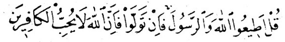
— Eğer dönerlerse (Allah'ın emrine uymaktan ve Resul'ünün gös-terdiği yoldan yüz çevirirlerse) bilsinler ki, Allah kâfirleri sevmez (onların ne tevbelerini kabul eder ve ne de günahlarını bağışlar)» (40).
Nitekim ulu Allah kendini büyük görüp Allah'ın ululuğunu kabul et-mediği için iblisin tevbesini kabul etmemiştir. Buna karşılık Hz. Adem'e tevbe etmeyi ilham etmesi ve tevbesini kabul etmesi, kendi dili ile güna-hını itiraf etmesi, pişmanlık duyması ve kendini suçlamasından dolayıdır.
Üstelik Hz. Adem'in (A.S.) işlediği kusur, gerçek manada günah sa-yılmaz. Çünkü peygamberler (Allah'ın selâmı üzerlerine olsun) masum-durlar alimler tarafından kabul edilen sahih görüşe göre ne peygamber olmadan önce ve ne de peygamberken günah işlemezler, günaha düş-mekten korunmuşturlar. Hz. Adem'in (A.S.) kusuru, sadece görünüşte gü-nahtır Buna rağmen o ve Havva, Allah'a şöyle seslenmişlerdir: Kur'an-ı kerimde ulu Allah bize onların yakarışını şöyle bildirmektedir:
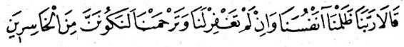
— Ey Rabb'imiz! Biz kendi kendimize zulmettik. Eğer sen bizi ba-ğışlamaz, bize merhamet etmezsen, hiç şüphesiz hüsrana uğrayanlar-dan olacağız» (41).
Görülüyor ki, Hz, Adem (A.S.) ve Havva yaptıklarına pişman olarak hemen tevbeye yönelmişler ve Allah'ın rahmetinden ümit kesmemişlerdir.
Nitekim ulu Allah şöyle buyuruyor:
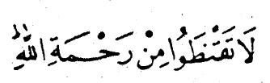
— Allah'ın rahmetinden sakın ümit kesmeyiniz» (42).
İblise gelince, o ne günahını itiraf etmiş, ne yaptığına pişman ol-muş, ne kendini suçlamış ve ne de tevbe etmeye yönelmiş, üstelik de Allah'ın rahmetinden ümit kesmiş, kendini beğenmiştir.
Her kim ki, tutumu şeytan gibi olursa tevbesi kabul edilmez. Buna karşılık günah işledikten sonraki tavrı Hz. Adem (A.S) gibi olanların tevbelerini Allah kabul eder.
Çünkü kaynağı nefsî arzuların azgınlığı olan her günahın affedil-mesi umulur, ama kendini beğenmişliğe dayanan hiç bir günahın affedil-mesi beklenemez. Hz. Adem'in (A.S.) kusuru nefsî arzuların azgınlığına dayanıyorken şeytanın günahı ise kendini, beğenmişlikten ileri geliyordu.
Anlatıldığına göre İblis bir gün Hz. Musa'ya (A.S.) gelir ve ona so-rar ki, «Allah'ın kendisine elci olarak seçtiği ve zaman zaman konuştuğu kimse sen misin?» Hz. Musa «evet, fakat sen kimsin ve ne istiyorsun» diye karşılık verir.
Şeytan kendini tanıtmadan Hz. Musa'ya (A.S.) şu teklifte bulunur, «Allah'ına bildir ki yarattıklarından biri senden tevbesinin kabul edilmesi-ni diliyor.»
Bunun üzerine Allah'dan Hz. Musa'ya (A.S.) şu vahiy gelir, «ey Mu-sa, ona de ki, senin hatırın için dileğini kabul ediyorum. Yalnız ona Hz. Adem'in kabrine secde etmesini söyle. Eğer secde ederse tevbesini ka-bul ederek günahlarını bağışlayacağım.»
Hz. Musa (A.S.) durumu şeytana bildirince o küplere biner, eski bü-yüklenme edasını yine takınarak şöyle der, «ey Musa! Ben ona cen-nette iken secde etmemiştim de şimdi ölüsüne mi secde edeceğim.»
Rivayete göre cehennemde İblis'in azabı ağırlaştırır ve ona «Allah'-ın azabını nasıl buluyorsun» diye sorulur, «olabileceğinden daha ağır» di-ye cevap verir. Bunun üzerine ona denir ki, «Adem, cennet bahçelerin-dedir. Ona secde et, özür dile de bağışlanasın.» Fakat o bu teklifi kabul etmeye yanaşmaz, bunun üzerine çektiği azab, bütün cehennemliklerin azabının yetmiş bin katı kadar ağırlaştırılır.
Haberde bildirildiğine göre ulu Allah, her yüz bin senelik azab dev-resinden sonra şeytanı cehennemden çıkarır ve Hz. Adem'i (A.S.) cen-netten çıkararak şeytana ona secde etmesini emreder, fakat şeytan bu emre uymaya yanaşmayınca yeniden ateşe atılır.
Kardeşlerim! Şeytan'dan kurtulmak istiyorsanız, Allah'a sarılınız, O'na sığınınız.
Kıyamet günü gelince meydana ateşten bir kürsi kurulur, üzerinde İblis çıkar; bütün şeytanlar ve kâfirler çevresinde toplanır, sesi anıran bir eşek sesi gibidir, şöyle konuşur, «ey cehennemlikler! Allah'ın daha ev-vel va'dettikieri bugün nasıl buldunuz?» Etrafındakiler hep bir ağızdan <<="" p="">
Şeytan da onlara der ki, «bu gün merhametten umut kestiğim bir gündür.» Bunun üzerine Allah meleklere onu ve yardakçılarını ateşten topuzlarla dövmelerini emreder. Ebediyen çıkarma emri duymaksızın kırk sene burada işkence çekerler. Cehennem azabından Allah'a sığınırız.
Anlatıldığına göre Kıyamet günü İblis mahşere getirilir, daha önce kurulan ateşten bir koltuğa oturması emredilir. Boynunda lânet hal-kası vardır. Allah azab meleklerine onu oturduğu koltuktan sürükleyerek cehenneme atmalarını emreder. Fakat boynundaki halkaya asılan melek-ler, onu sürüklemeyi başaramazlar.
Bunun üzerine Allah Cebrail'e yanına seksen bin melek alarak onu cehenneme çekmelerini emreder, fakat o da başaramaz. Arkasından Allah İsrafil ve Azrail'e de yanlarına atacakları seksen biner kişi ile birlik-te ayni emri verir, fakat bunlar da onu yerinden kıpırdatamaz. Bunun üzerine Allah buyurur ki, «boynunda o lânet halkası varken yaratmış ol-duğum bütün meleklerin bin kaç katı bile biraraya gelseler, onu cehen-neme taşıyamazlar.»
Anlatıldığına göre, İblisin birinci kat gökte iken ismi «Abid», ikinci kat gökte iken ismi «Zahid», üçüncü, kat gökte iken ismi «Arif», dördün-cü kat gökte iken ismi «Veli», beşinci kat gökte iken adı «Takı», altıncı kat gökte iken adı «Hazin», yedinci kat gökte iken adı «Azazil» idi.
Fakat Levh-i Mahfuz'daki adı, «İblis» idi, o sonunda başına gelecek olanları bilmiyordu.
Ulu Allah kendisine Hz. Adem'e (A.S.) secde etmesini emredince Allah'a dedi ki, «onu benden üstün mü tutuyorsun? Ben ondan daha ha-yırlıyım. Beni ateşten onu ise çamurdan yarattın» Allah şeytana «ben di-lediğimi yaparım» diye cevap verdi.
Kendini daha şerefli gördüğü için burun kıvırarak ve tepeden baka-rak Hz. Adem'e (A.S.) secde edeceği yerde arkasını çevirdi, diğer bütün melekler bu emre Uyarak kapandıkları secdede uzun bir müddet bekler-ken o sipsivri olarak ayakta kaldı.
Melekler başlarını kaldırıp da onun kendileri ile birlikte secde et-memiş olduğunu görünce şükür maksadı ile ikinci sefer secdeye kapan-dılar. O ise arkadaşlarına yan yan bakarak, onlara katılmayı asla düşün-meyerek ve Allah'ın emrini kırdı diye hiç bir pişmanlık duymayarak yine tek başına ayakta kaldı.
Bunun üzerine Allah yakışıklı vücudunu bozdu, onu domuz sureti-ne çevirdi, başını deve başı ve göğsünü büyük deve hörgüçü biçimine koydu, yüzü maymun yüzüne döndü, gözleri yüzü boyunca uzanan iki ya-rık halini aldı, burun delikleri hakamet çanağı gibi açıldı, dudakları ökü-zünkilere döndü, azı dişleri domuzunkiler gibi ağzından dışarıya fırladı, sakalı yolundu, çenesinde sadece yedi seyrek tüy kaldı.
Allah onu önce cennetten, sonra gökten ve daha sonra yeryüzün-den kovarak adalara sürdü. Şimdi yeryüzüne ancak gizli gizli ayak ba-sabiliyor. Kâfirlerden biri olduğu için Allah'ın lâneti Kıyamet gününe ka-dar onunla birliktedir.
Oysa ki, daha önce yakışıklı, dört kanadlı, bilgili, çok ibadet işleyen, meleklerin Tavusu ve en büyüğü olan, daha bir çok imrenilir, sıfatlar ta-şıyan bir kimse idi. Bunların hiç birisinin ona faydası olmadı. Bundan herkesin ibret alması gerekir.
Söylendiğine göre İblis tuzağa düşürülünce Cebrail ve Mikâil ağla-maya başlarlar. Allah, onlara «niye ağlıyorsunuz» diye sorar. Onlar da «sana varan yolda tuzağa düşmeyeceğimizden emin değiliz» derler, Ulu Allah da onlara «işte öyle olunuz, benim yolumda tuzağa düşmeyeceği-nize hiç bir zaman güvenmeyiniz» buyurur.
Anlatıldığına göre İblis Allah'ın katından kovulunca O'na der ki, «ey Rabb'ım! Adem yüzünden beni cennetten kovdun. Ben ondan kendi başı-ma öç alamam, ancak sen beni üzerine salarsan öcümü alabilirim» Allah ona «seni onun oğulları üzerine salıyorum,çünkü peygamberler senin tu-zağından korunmuşlardır» diye karşılık verir.
O «daha başka imkânlar istiyorum» der. Allah ona «O'nun soyundan gelen her çocuğa karşılık senin soyun iki kat hızla üreyecek» diye cevap verir.
Şeytan yine «daha da isterim» der. Allah ona «onun soyundan ge-lenlerin kalbleri senin yatağındır, onların damarlarında dolaşabilirsin» di-ye karşılık verir. Şeytan «daha da isterim» der. Allah ona «atlı yaya bütün yardakçılarını onun soyundan gelenlerin üzerine sal, mallarına ortak ol, yani haram yollardan kazanarak meşru olmayan yerlere sarfetmelerini sağ-lamaya çalış. Çocuklarına ortak ol, yani onların haram yollardan veya gü-nah olan çiftleşme şekilleri ile çocuk peydahlamalarına çalış, çocuklarına putperestlik inancını hortlatan isimler taktırmaya çalış, batıl dinlere ve gayrı meşru mesleklere yönlendirilmelerine sebep ol. Onları kandırabil-mek için bol bol asılsız vaadlerde bulun.
Meselâ putların koruyuculuğuna güvenmelerini sağlamaya çalış. Babalarının soyluluğundan medet ummayı tavsiye et, tevbeyi sonraya bı-rakabilecekleri hususunda onları, kandırmaya çalış» diye cevap verdi. Ama, Allahın tavsiyesi tehdit yolu ile olmuştur. Nitekim, «dilediğinizi ya-pın» âyetinde de böyledir.
Şeytanın bu tuzağına karşı Hz. Adem (A.S.) de Allah'a der ki, «ya Rabb'i! Onu benim üzerime saldın, eğer senin yardımın olmazsa ona karşı kendimi savunamam» Allah Hz. Adem'e «senin soyundan her yeni doğan çocuğun başına meleklerden bir koruyucu veriyorum» diye cevap verir.
Hz. Adem «daha çok isterim» der. Allah ona «iyiliklerin mükâfatı on kattır» diye karşılık verir. Hz. Adem «daha da isterim» der. Allah ona «zürriyetinin canları çıkmadıkça tevbe etme imkânını ellerinden almam» diye cevap verir. Hz. Adem «daha da isterim» der. Nihayet Allah «ince eleyip sık dokumadan onları affederim» diye cevap verince Hz. Adem «Bununla yetiniyorum» der.
Bunun üzerine İblis tekrar ortaya çıkarak der ki, «ya Rabb'i! Adem'-in soyundan peygamberler yarattın, onlara kitaplar indirdin, hani benim elçilerim» Allah «kâhinler» diye cevap verir. Şeytan «kitaplarım ne ola-cak» diye sorar. Allah «vücudlara döğmeler yolu ile işlenen yazı ve re-simler» cevabını verir. Şeytan «sözüm ne olacak» der. Allah «yalan» diye karşılık verir. Şeytan «Kur'ânım ne olacak» der. Allah «şiir» diye ce-vap verir. Şeytan «müezzinim kim olacak» der. Allah «çalgı âletleri» diye cevap verir.
Şeytan «mescidim neresi» der. AlIah «çarşı ve pazar» diye karşılık verîr. Şeytan «Evim neresi» diye sorar. Allah «hamam» diye cevap verir..
Şeytan «yiyeceğim ne olacak» der. Allah «üzerinde adım anılmayan her türlü gıda maddesi» diye karşılık verir.
Şeytan «ne içeceğim» Her. Allah «sarhoşluk veren bütün içecekler senin» karşılığını verir Seytan « tuzağım neler olacak» der. Allah «kadınlar» cevabını verir.
(40) Kur'an-ı Kerim/Al- İmran, 32
(41) Kur'an-ı Kerim/A'raf Sûresi, 23
(42) Kur'an-ı Kerim/Zumer Sûresi, 53
Ulu Allah (C.C.) buyuruyor ki:
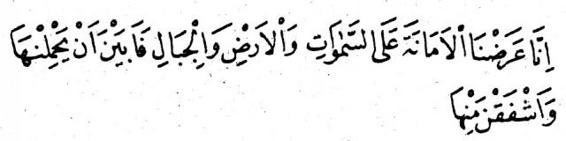
— Biz emaneti göklere, yeryüzüne ve dağlara crzettik. Onlar onu yüklenmeye yanaşmadılar, ondan ürktüler« (43)
Âyet-i kerimedeki «emanet» in mânası, karşılığında sevap yahut ceza tahakkuk eden ibadet ve farzlardır.
Kurtubî'ye göre «emanet» bütün din görevlerini içine alır,âlimlerin çoğunluğunun görüşü ve sahih fetva bu şekildedir. Fakat ayrıntılarda çe-şitli görüşler vardır. îbni Mes'ud'a göre âyet-i,kerime, mal güvenliği ile ilgilidir, emanetler ve benzeri gibi. Yine ona isnad edilen başka bir gö-rüşe göre âyette bütün farzlar kasdedilmekle birlikte özellikle mal gü-venliği sözkonusudur.
Ebu Derda «cünübluktan arınmak emanettir» der. İbni Ömer «insan vücudunda Allah'ın ilk yarattığı organ cinsiyet uzvudur. Sanki Allah ku-tuna «bu uzuv,senin uhdene tevdi edilmiş bir emanettir, onu mutlaka yerinde kullan,onu koruduğun müddetçe ben de seni korurum» demlştir. Buna göre cinsiyet uzvu bir emanettir, söz gibi emanettir, kulaklar birer emanettir,dil bir emanetir,karın,eller ve ayaklar birer emanettir.Emaneti korumayanın imanı yoktur.
Hasan der ki, «emanet göklere, yere ve dağlara arzedildi, bunların hepsi içindekilerle beraber titrediler. Çünkü Allah onlara teker teker «eğer emaneti iyi kullanırsan seni mükâfatlandırırım, eğer kötüye kullanırsan cezalandırırım» diye buyurdu.
Bunun için her biri «hayır» cevabını verdi.
Mucahid (rehimehullahu) der ki, «Allah Hz. Adem'i yarattığı za-man emaneti ona da ayni şartlarla teklif etti. Adem «onu yükleniyorum» dedi.
Hiç şüphesiz Allah emaneti göklere, yere ve dağlara mecbur tuta-rak değil, onları gönüllü bırakarak arzetmiştlr. Yoksa eğer onu onlara, mecbur tutarak teklif etmiş olsaydı, onlar da onu üzerlerine almaktan ka-çınmazlardı.
Kaffal ve onun görüşünde olanlara göre âyetteki «arzetme, teklif etme» ifadesi sembolik (temsilî) dir. Yani gökyüzü, yer ve dağlar, bütün iriliklerine rağmen, eğer emaneti yüklenmeye elverişli olsalardı, karşı-lığı olan mükâfat ve azabın önemi yüzünden, şeriatı omuzlamak bunlara ağır gelirdi Demektir ki, şeriatı yüklenmek, göklerin, yeryüzünün ve dağ-ların kaçınmasını haklı çıkaracak kadar dev bir iştir.
Bununla birlikte ulu Allah'ın «insan onu yüklendi» diye belirttiği üze-re, insanoğlu bu yükün altına girmiştir. Yani Hz. Adem tohum âleminde zürriyeti belinden çıkarken ve onlardan Allah'ı tanıyacaklarına dair söz alınırken kendisine arzedilen emanetin sorumluluğunu benimsemiştir.
Ulu Allah âyet-i kerimenin devamında «hiç şüphesiz o, (yani insan) çok zalim ve pek cahildir» buyuruyor. Demektir ki, o, bu yükü yüklenir-ken nefsine ağır şekilde zulmetmiştir, ayrıca yüklendiği sorumluluğun ağırlığı hususunda pek cahildir veya Allah'ın emirlerinin ne olduğunu bil-memektedir.
İbni Abbas'dan (R.A.) rivayet edildiğine göre şöyle buyuruyor: Ema-net, Hz. Adem'e arzedildi, «bunu içindekilerle birlikte al, eğer itaat eder-sen seni affederim. Eğer emrimi kırarsan seni azaba çarptırırım» denildi. Hz. Adem «peki, onu içindekilerle birlikte kabul ediyorum» diye cevap verdi. Fakat o günün ikindisi ile akşamı arasındaki kadar bir zaman he-nüz geçmişti ki, Hz. Adem yasak ağacın meyvasını yedi. Ne var ki, Allah hemen rahmetini arkasından yetiştirdi de kusuruna karşılık tevbe «ede-rek yine doğru yola döndü.
«Emanet» kelime olarak «iman» kelimesi ile ayni köktendir. Buna göre Allah'ın emanetini koruyan kimsenin Allah da imanını korur. Pey-gamber'imiz (S.A.S.) şöyle buyurur:
« — Emanete karşı titizlik göstermeyenlerin imanı yoktur.Sözünde durmayanın dini de yoktur.»
Bu konuda bir şair şöyle der:
Korkarak hiyanete razı olanın boynu devrilsin!
O yüzden emaneti korumaya yan çizenin
Dini ve insanlığı bir yana bırakarak başını alıp gitmiştir.
Yaşadıkça başına gelecek belâlar birbirini takip edecektir.
Diğer bir şair de şöyle der:
Hıyanete boyun eğmeği huy edinen kimse
Pek kısa zamanda sıranın kendisine gelmesine lâyıktır.
Zilletler durmadan elemlerini yağdırırlar
Zimmetine hıyanet edenler ile sözünü tutmayanlara.
Peygamber'imiz (S.A.S.) buyuruyor ki:
-« Mü'min hıyanet ve yalan ile ilgisi olmayan her huyu edinebilir.»
Peygamber'imiz (S.A.S.) buyuruyor ki:
— Ümmetim, emaneti ganimet ve sadakayı angarya saymadıkça iyi yoldadır»
Peygamber'imiz (S.A.S.) buyuruyor ki:
— Emaneti güvendiğin kimseye teslim et, sana hainlik edene sen de karşılık verme.»
Buharî ile Müslim'de Ebu Hureyre'den (R.A.) rivayet edilerek nakle-dildiğine göre Peygamber'imiz (S.A.S.) şöyle buyuruyor:
— Münafığın alâmeti üçtür: Konuştuğu zaman yalan söyler, verdiği sözü tutmaz, uhdesine verilen emanete hiyanet eder.»
Demektir ki, münafık bir kimseye birisi güvenip bir sır verse hemen hıyanet ederek onu başkalarına açar, uhdesine maddî bir emanet tevdi edilse onu inkâr ederek veya korumayarak veyahut izinsiz kullanarak ona karşı hıyanet eder.
Emaneti korumak, mukarreb meleklerin, peygamberler'in sıfatı ve Allah korkusu taşıyan iyilerin huyudur. Ulu Allah (C.C.) şöyle buyurur:
— Hiç şüphesiz Allah size emanetleri lâyık olanlara vermenizi em-reder.» (44)
Bütün tefsir âlimleri, bu âyet-i kerimenin şeriatın bir çok temel pren-sibini kapsadığı görüşündedirler. Âyet-i kerimenin muhatabı idare eden olsun, idare edilen olsun, bütün mükelleflerdir.
Buna göre idarecilerin mazlumu destekleyip hakkını ortaya çıkar-maları gerekir, bu bir emanettir. Başta yetimler olmak üzere müslüman-İarın mallarını korumaları gerekir, çünkü o bir emanettir. Âlimlerin halka dinin hükümlerini öğretmeleri gerekir, bu âlimlerin koruyuculuğuna tes-lim edilmiş bir emanettir.
Ana-babanın çocuğuna iyi terbiye vererek göz - kulak olması gere-kir, çünkü çocuk ana - babaya teslim edilmiş bir emanettir.
Nitekim Peygamber'imiz (S.A.S.) şöyle buyuruyor:
— Hepiniz ayrı ayrı birer çobansınız, herkes sürüsünden sorumludur.»
Zehr-ur Rİyaz adlı kitapta anlatıldığına göre bir kul Kıyamet günü getiririlerek ulu Allah'ın huzuruna dikilir. Ulu Allah ona «falanın emanetini geri verdin mi» diye sorar. Kul «hayır, ya Rabbl!» diye cevap verir.
Bunun üzerine Allah bir meleğe emir verir, elinden tutar, onu ce-henneme götürür ve cehennemin dibine düşmüş olan o emaneti adama gösterir ve onu ateşe atar. Adam, cehennemin dibine ininceye kadar yetmiş yıl ateşte batmaya devam eder. Dibe inince orada duran ema-neti alıp yükselmeye başlar. Cehennemin ağzına çıkınca ayağı kayar, yine batmaya başlar. Sonra yine yükselir, yine batar. Peygamber'imi-zin (S.A.S.) şefaati sayesinde Allah'ın lütfu imdadına yetişerek emanet sahibi ona hakkını helâl edinceye kadar bu iniş - çıkışlar ayni şekilde devam eder.
Ebu Seleme (R.A.) şöyle rivayet ediyor, «bir gün Peygamber'imizle (S.A.S.) birlikte oturuyorken bir cenaze getirildi, namazı kılınacaktı. Pey-gamber'imiz «üzerinde borç var mı» diye sordu, «hayır» diye cevap ver-diler. Bunun üzerine cenaze namazını kıldırdı.
Arkasından bir başka cenaze getirdiler. Peygamber'imiz yine «borcu var mı» diye sordu, «evet, var» diye cevap verdiler. Peygamber «arkada bir şey bıraktı mı» diye sordu, «evet, üç dinar» dediler. Bunun üzerine Peygamber'imiz bu cenazenin de. namazını kıldırdı.
Derken üçüncü bir cenaze getirdiler, Peygamber'imiz (S.A.S.) «bor-cu var mı» diye sordu, «evet,» diye cevap verdiler. Peygamber'imiz «ar-kada bir şey bıraktı mı» diye sordu, «hayır» dediler. Bunun üzerine «ar-kadaşınızın cenaze namazını siz kılınız» dedi.
(43) Kur'an-ı Kerim/Ahzab Sûresi,72
(44) Kur'an-ı Kerim/Nisa Sûresi, 58
Ulu Allah (CC.) buyuruyor ki:
— Namazlarında huşu içinde olan mü'minler kurtuluşa ermişler-dir» (45).
Bilesin ki, dil âlimleri «huşu» kelimesini «korkmak» ve «çekinmek» gi-bi kalb eylemlerinden» sayar, bazıları da «sükûnet», «öteye - beriye bak-mamak» ve «oynamamak» gibi davranış eylemlerinden kabul eder.
Fıkıh âlimleri «huşu»un namazın farzlarından mı olduğu, yoksa fa-ziletlerinden mi sayılması gerektiği hususunda anlaşmazlık halindedirler, her iki görüşü de ileri sürenler vardır. Birinci görüşü savunanlar şu ha-dis ve âyete dayanıyorlar. Peygamber'imiz (S.A.S.) buyuruyor ki:
— Kulun ancak aklı tam yerinde iken kıldığı namaz, namaz yerine geçer.»
Ulu Allah (C.C.) buyuruyor ki: «— Namazı beni hatırlamak için kil!» (Tahâ: 14). İlk görüşü savunanlara göre gaflet hali «zikir» le, yani Allah'ı hatır-da tutma eylemi ile bağdaşmaz, bu yüzden ulu Allah:
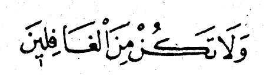
«Sakın gafillerden olma» diye buyurur (46).
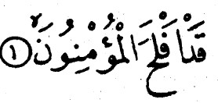
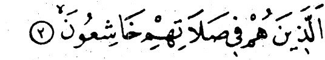
Beyhakî'nin Muhammed İbni Sirin (R.A.) dan rivayetine göre Mu-hammed İbni Sirin şöyle demiştir «Haber aldım ki Peygamber'imiz (S.A.S.) namaz kılarken gözlerini havaya kaldırdığı için bu âyet inmiştir.» Abdur-rezzak'ın (R.A.) ayni konudaki rivayetinde bu âyet inince Peygamber'i-mizin kendisine namazda huşu içinde olmasını ve gözlerini secde yerin-den ayırmamasını emrettiği ilâve edilmektedir.
Hakim ve Beyhakî'nin birlikte Ebu Hureyre (R.A.) dan naklettiklerine göre Peygamber'imiz (S.A.S.) namaz kıldığı vakit gözlerini semaya diker-di. Bunun üzerine kendisine yukardaki âyet inmiş, oda hemen başını eğ-mişti.»
Hasan'dan (R.A.) rivayet edildiğine göre Peygamber'imiz (S.A.S.) şöyle buyuruyor:
— Beş vakit namaz, birinizin evin önünden akan suyu çok bir nehir gibidir, her gün beş kere bu nehre girip yıkanırsa üzerinde kir namına bir şey kalabilir mi?»
Peygamber'imiz (S.A.S.) demek istiyor ki, büyükleri dışında bütün günahları, geride hiç bir şey bırakmamak üzere, beş vakit namaz gide-rir. Elbette ki bu durum, huşu içinde ve kalb huzuru ile kılınan namaz için söz konusudur, böyle olmayan namaz da zaten sahibine reddedilir.
Peygamber'imiz (S.A.S.) buyuruyor ki:
— Dünyanın her şeyi ile ilgisini keserek iki rek'at namaz kılan kim-senin geçmiş »bütün günahları affedilir»
Yine Peygamber'imiz (S.A.S.) şöyle buyuruyor:
— Namaz kılmak, hacca gitmek, Beytüllah'ı tavaf etmek ve diğer usulü belirlenen ibadetler,Allah'ı hatırda tutmayı sağlamak için emredil-miştir. Hatırlanan hakkında —ki asıl amaç ve hedef o'dur— kalbinde say-gı ve ürperme bulunmayınca böyle bir hatırlamanın (zikrin) ne kıymeti vardır?»
Yine Peygamber'imiz (S.A.S.) buyuruyor ki:
— Kötü ve çirkin davranışlardan sahibine alıkoyamayan namaz ku-lun Allah'dan daha çok uzaklaşmasına sebep olur,»
Bekir İbni Abdullah der ki, «ey insanoğlu! Allah'ın huzuruna izin-siz girip kendisi ile tercümansız konuşmak istersen bunu yapabilirsin.» Kendisine «bu nasıl olabilir» diye sorarlar. Bekr İbni Abdullah şöyle ce-vap verir, «iyicene bir abdest alırsın, ve namaz yerine gidersin. İşte o an-da Allah'ın huzuruna izinsiz girmiş, tercümansız O'nunla konuşmuş olur-sun.»
Hz. Ayşe (R. Anha) diyor ki, «Rasulüllah ile karşılıklı konuşurduk O bize bir şey der, biz de O'na karşılığında bir şey söylerdik. Fakat namaz vakti girince Allah'ın azameti ile öylesine meşgul olurdu ki, sanki ne O bizi tanır ve ne de biz O'nu tanır olurduk.»
Peygamber'imiz (S.A.S.) buyuruyor ki:
— Allah, kulun kalbi ile bedenini birlikte hazırlayarak kılmadığı na-mazin tarafına bakmaz.»
Allah'ın dostu Hz. İbrahim (A.S.) namaza durduğu zaman iki mil uzaktan kalbinin atışı duyulurdu.
Said ül-Tenuhî (rehimehullahu) namaz kılarken yanağından sakalına süzülen göz yaşlan dinmezdi.
Peygamber'imiz (S.A.S.) adamın birini namazda sakalı ile oynarken gördü ve «eğer bu adamın kalbi Allah korkusu taşısa azaları da taşırdı» diye buyurdu.
Anlatıldığına göre Hz. Ali (kerremellahu vechehu) namaz vakti gi-rince titremeye başlar, rengi atardı. »Ne oluyor sana, ya emirülmüminin» dediklerinde «göklere yere ve dağlara arzedilince ürkerek yüklenmekten çekindikleri halde benim üzerime aldığım emânetin vakti geldi» diye cevap verirdi.
Rivayete göre Ali İbni Hüseyin (rehimehullahu) abdest alırken rengi sararırdı, yakınları ona «abdest alırken sana niye böyle oluyor» sorarlar, O da şu cevabı verirdi, «kimin karşısına dikilmek istediğimi biliyor mu-sunuz?»
Rivayete göre Hatem ül.Asam'a (R.A.) namazı nasıl kıldığı hakkında soru soruldu, o da Şöyle cevap verdi: «Namaz vakti girince güzelcene abdest alır, namaz kılacağım yere varırım. azalarım verine otursun diye önce bir müddet otururum. Sonra kalkar. kaşlarımın arasında Kabe. ayaklarımın altında Sırat köpsüsü, sağımda cennet, solumda cehennem, arkamda_ölüm meleği olan Azrail varmış gibi farzederek ve kılacağım son namazmış gibi kabul ederek korku ve ümid arası bir ruh hali içinde
usulüne uygun bir tekbir alarak namaza dururum.
Düzenli bir şekilde «Fatiha» ve «zammı sure » okurum, tevazu içinde ruküa vararak huşu icinde secdeye kapanırım. Sonra sol ayağımın dışını yere, sağ ayağımı baş parmak üzere dikerek bağdaş kurar, otururum,
bu yaptıklarıma ihlas halini katarım. Sonunda «kıldığım namaz acaba ka-bul oldu mu, yoksa olmadı mı» bilemem.
İbni Abbas (R. Anhuma) der ki, «tefekkür hali içinde kılınan ne uzun ne kısa (orta) iki rek'atlık namaz, başıboş bir kalb ile kılınan bir gecelik namazdan daha hayırlıdır.»
Peygamberimiz (S.A.S.) buyuruyor ki:
— Ahir zamanda ümmetimden öyleleri gelecek ki, camilere varacak, halka kurup oturacaklar. Dillerinden dünya ve dünya sevgisi düşmeyecektir. Öyleleri ile oturup kalkmayın, Allahın onlara hiç bir haceti yoktur.»
Hasan El Basri'den (R.A.) rivayet edildiğine göre: «Peygamberimiz
(S.A.S.) bir gün «size insanlar arasında en çirkin hırsız kimdir, haber ve-reyim mi» diye buyurdu. Orada bulunanlar «kimdir ya Resulullah» diye sordular. Peygamber'imiz «Namazından çalandır» diye cevap verdi. Ora-dakiler «namazından çalması nasıl olur» diye sordular. Peygamber'imiz «namazın ruküunu ve secdesini eksik - eksik yaparak» cevabını verdi.
Peygamber'imiz (S.A.S.) buyuruyor ki:
— Kıyamet günü kul, ilk önce namazdan hesaba çekilecektir. Namaz-dan yana bir eksiği çıkmadığı takdirde hesaplaşması kolay geçer.Fakat eğer namazdan yana bir eksiği çıkarsa ulu Allah meleklerine «bu kulumun nafile ibadetleri varsa ondan borca kalmış farzları yerine koyun» diye buyurur.»
Peygamber'imiz (S.A.S.) buyuruyor ki:
—Bir kula verilebilecek en hayırlı hediye iki rek'at namaz kılsın di-ye kendisine izin vermektir.»
Namaza duracağı zaman Hz. Ömer'in (R.A.) böğürleri titrer ve dişleri takırdardı. Bu halin sebebi kendisine sorulunca «emaneti yerine getirme-nin ve farz borcunu ödemenin vakti geldi, bilmem ki, onu nasıl yerine ge-tireceğim?»
Anlatıldığına göre Half İbni Eyyüb (R.A.) bir gün namazda iken bir yerinden arı sokar. Sokulan yer kanar, fakat Half hiç bir şey duymaz.
Bu sırada İbni Said çıkagelir, Half'e üzerinden kan geldiğini bildirir de o da elbisesini yıkar. Ona sorarlar, «nasıl oluyor, arı seni sokuyor, vücudunu kanatıyor da sen hiç bir şey duymuyorsun?»
O da şu cevabı verir, «Melik ül-Cebbar olan Allah'ın huzurunda du-ran, başından Azrail dikilen, solunda cehennem ve ayaklarının altında Sırat köprüsü bulunan kimse böyle bir şeyi nasıl duyabilir?»
Amr İbni Zerrin (rehimehullahu) eli kanser olmuş, kendisi ibadet ve takvada hayli yüksek dereceye varmış bir zat idi, doktorlar «elini mut-laka kesmemiz gerekiyor» dediler. O da «öyle ise kesin» dedi. Doktor-lar «seni ipler ile bağlamadan kesemeyiz» dediler.
Bunun üzerine «beni bağlamanızı istemiyorum, namaza durduğum zaman kesiniz» dedi. Nitekim namaza durunca elini kestiler, o ise hiç bir şey duymadı bile.
— 80 —
ONDÖRDÜNCÜ BÖLÜM BITTI
(45) Kur'an-ı Kerim/Mu'm'nun Sûresi, 1
(46) Kur'an-ı Kerim/Araf Sûresi, 205.
Enes Bin Malik\'den rivayet edildigine göre Peygamber\'imiz (S.A.S.) buyuruyor ki:
\"Benîm üzerime bir kere selât-ü selâm getirenin nefsinden ulu, Allah (C.C) beyaz bir bulut yaratir. Allah (C.C) buluta rahmet denizinden su yüklenmesini emreder, o da yüklenir. Sonra Allah (C.C) buluta yagmasini emreder, o da yagar. Yere düsen her damladan Allah (C.C) altin, daglara düsen her damladan gümüs yaratir. Kafirin üzerine düsen her damladan da Allah (C.C) onlara iman nasip eder.\"
Ulu Allah (C.C.) buyuruyor ki:
\"Siz insanlarin iyiligi için ortaya çikarilmis, en hayirli bir ümmetsiniz, iyiligi emreder ve kötülükten alikorsunuz. Allah\'a da inanirsiniz.\"
(Al-i imran - 110)
Kelbi (rehimehullahu} der ki: bu âyet-i kerime bu ümmetin diger ümmetlere karsi üstünlük durumunu açiklamaktadir. Bu âyet-i celile gösterir ki, bu islâm ümmeti kayitsiz sartsiz bütün ümmetlerin en hayirlisidir.
Bu üstünlük ilk müslüman halkasi ile son müslüman halkasi arasinda, diger ümmetler karsisinda ortaktir ama halkalar arasinda ayri derece farki vardir. Nitekim sahabelerin ümmetin geri kalanindan üstün oldugu hakkinda hadîsler vardir.
Âyeî-i kerimede geçen «insanlar «icin çikarilmis» ifadesi insanlarin iyilik ve yarari için bütün yüz yillarda meydana getirilmis, temayüz edip taninmis demektir.
Yine âyet-i kerimedeki «iyiligi emreder, kötülükten alakor ve Allah\'a inanirsiniz» ifadesi, yeni cümledir. Bu cümle ümmetin üstünlük sebeplerini açiklamaktadir. Bu ifadeler, ayni zamanda bu ümmetin belirtilen sifatlari tasidigi müddetçe ve gösterilen yolda ilerledigi sürece ancak diger ümmetlerden üstün olacagini, buna göre iyiligi emrederek kötülükten alakoyma meziyetini yitirdikleri zaman üstünlüklerini de kaybedeceklerini açiklamaktadir.
Demek ki bu ümmetin mensuplari, iyiligi emrederek kötülükten alikoyduklari ve müslüman olsunlar diye kâfirler ite savastiklari için Allah (C.C) onlari insanlara yararlilikta en üstün kilmistir.
\"Insanlarin en hayirlilari, insanlara yararli olanlar, buna karsilik insanlarin en kötuleri onlara zarari dokunanlardir.\"
Âyet-i kerimedeki «Allah (C.C)\'a inanmiz» ifadesi. Allah (C.C)\'in birligini tasdik edersiniz, bu inançta sebat edersiniz ve Hz. Muhammed (S.A.V)\'in Allah (C.C)\'in elçisi oldugunu kabul edersiniz demektir.
Çünkü Hz. Muhammed (S.A.V)\'in elçiligini inkâr edenler. Allah (C.C)\'a iman etmis sayilmaz. Zira böyleleri Peygamberimizin (S.A.S.) Allah (C.C) katindan getirdigi mucize âyetleri kendi uydurmasi zannederler.
Peygamberimizin (S.A.S.) buyuruyor ki:
\"içimizden biri bir egrilik gördügü zaman onu eli ile degistirsin, eger gücü yetmiyorsa dili ile degistirsin, buna da gücü yetmiyorsa kalbi île degistirsin ki, bu imanin en zayif sekilde tezahürüdür.\"
Bazi âlimler bu hadis ile ilgili olarak derler ki: elle degistirmek idarecilerin, sözle degistirmek âlimlerin ve kalble degistirmek de bütün müslümanlarin görevidir.
Fakat bir kisim âlimler de egriligi degistirebilmek herkesin egriligi degistirmekle yükümlü oldugunu ileri sürerek ilk görüsteki vazife bölümüne karsi çikarlar.
Nitekim ulu Allah (C.C.) buyuruyor ki:
\"Iyilik ve takvada biribîrinizi destekleyiniz, kötülük ve azginlikta degil» (Maide - 2).
«Iyilikte yardimlasmak» iyilik islemeyi tesvik etmek, ona verdiren yarali yollari açmak. kötülük ve azginlik yollarini mümkün oldugu kedar kapatmakla otur.
Peygamberimiz (S.A.S.) diger bir hadisde buyuruyor ki:
\"Kim bir bid\'at sahibini önterse Allah (C.C) onun kalbini güven ve iman ile doldurur. Kim bir bid\'at sahibine karsi çikarsa Allah (C.C) onu en korkulu günde (Kiyamet gününde) emniyete çikarir. Iyiligi emrederek kötülükten alakoyanlar. Allah (C.C)\'in yeryüzündeki halifeleri, O\'nun kitabinin sözcüleri ve Resul\'ünün temsilcileridir.\"
Hüzeyfe (RA) dan rivayet edildigine göre söyle demistir: \"Insanlara öyîe bir gün gelecektir ki onlarin nazarinda bir ates lesi iyiligi emrederek kötülükten alakoyan bir müminden daha mekbul olacaktir.\"
Hz. Musa (A.S.) ulu Allah (C.C)\'a «mümin kardesi için dua eden, ona iyiligi emrederek kötülükten uzak durmasini söyleyen kimsenin mükâfati nedir, ya Rabb\'i!» diye sordu.
Ulu Allah (C.C) Hz. Musa (A.S)\'ya söy\'e cevap verdi. «her kelimesine karsilik ona bir yillik ibadet yazarim ve onu cehennem azabina çarptirmaktan heya ederim.»
Kutsi bîr hadisde ulu Allah (C.C.) söyle buyuruyor:
— \"Ey ademoglu! Tevbe etmeyi erteleyen, bos kuruntular pesinde kosarek Âhirete amelsiz gelen kimselerden olma. Böyleleri ibadet edenler gibi konustugu halde münafiklarin yaptigi hareketleri yaparlar. Kendilerine verilen ile gözleri doymaz, yokluga karsi sabirsizdirlar. Salihleri severler, fakat onlarden degildirler, münafiklardan sözce nefret ederler, fakat onlardandirlar.
Iyiligi emrederler, faket kendileri yapmazlar, kötülükten baskalarini alikoymaya çalisirlar, fakat kendileri kötülük islemekten geri durmazlar.\"
Hz. Ali (keremellahu vechehu) diyor ki: Peygamberimizin (S.A.S.) söyle dedigini duydum:
\"Âhir zamanda öyle düsük çeneli kisa akilli kimseler türeyecektir ki, söyleyecekleri yararli iyi sözler girtlaklarini asmayacak (kalblerine islemeyecektir) Okun av hayvanini delik-desîk etmesi gibi bu kimseler de dini delik-desik edeceklerdir.\"
Peygamber\'imiz (S.A.S.) buyuruyor ki:
\"Gök yüzüne çikarildigim gece dudaklari atesten makaslar ile kesilen bir takim erkekler gördüm. «Ya Cebrail, bunlar kimdir?» diye sordum.
Cebrail bana dedi ki. «bunlar ümmetinin baskalarina iyiligi emreden ve fakat kendilerini unutan hatipleridir.»
Nitekim ulu Allah (C.C) böyleleri hakkinda söyle buyurur:
\"Insanlara iyiligi emredip kendinizi unutuyor musunuz? Oysa ki, kitabi okuyan da sizsiniz. Aklinizi basiniza toplamayacak misiniz?\"
(Bakara Süresi, 44).
Yani Allah (C.C)\'in kitabini okudugunuz halde onun prensiplerine göre uygun hareket etmiyorsunuz. Bu adamlar baskalarina sadaka vermeyi emrettikleri halde kendileri vermezlerdi. Demek ki, müminlerin müminlere iyiligi emredip kötülükten alakoymaya çalisirken kendilerini unutmamalari gerekir.
Nitekim ulu Allah (C.C) söyle buyuruyor:
\"Mümin erkekler ile mümin kadinlar, birbirlerinin velileridir. Iyiligi emredip kötülükten alikorlar, namazi dosdogru kilarlar, zekâti verirler, Allah\'a ve O\'nun Resul\'üne itaat ederler. Iste bunlar yok mu? Allah onlari esirgeyecektir. Hiç süphesiz, Allah Aziz ve Hâkimdir.\"
(Tevbe - 7)
Âyet-i kerimede görüldügü gibi ulu Allah (C.C) müminleri iyiligi emrettikleri için övmektedir. Açiktir ki, iyiligi emretme ve kötülükten alakoyma görevinden kaçinanlar, âyet-i kerimede övülen müminlerin disinda kalirlar.
Öte yandan ulu Allah (C.C), bir takim kavimleri iyiligi emredip kötülükten alakoymaktan kaçindiklari için kinamaktadir.
Ulu Allah (C.C.) söyle buyuruyor:
\"Onlar, yaptiklari kötülükden alakoymazlardi. Ne kadar fena bir is yapiyorlardi!\" (Maide - 79)
Ebû derdadan rivayet edildigine göre Peygamberimiz (S.A.S.) söyle buyurmustur:
\"Ya îyiligi emreder ve kötülükten alakorsunuz veya ulu Allah (C.C) basiniza öyle zalim bir idareci musallat eder ki, ne büyügünüze hürmet eder ve ne de küçügünüze acir,
içinizdeki iyilerin edecegi dualar kabul olunmaz. Allah (C.C)\'dan yardim dîlerler, fakat yardim gelmez, günahtan affedilsin diye yalvarirlar, fakat affolunmaz. \"
Hz. Ayse\'den (R. Anha) Rivayet edildigine göre Peygamber\'imiz (S.A.S.) söyle buyuruyor:
\"Ulu Allah (C.C), halkinin onsekiz bin kisisi, peygamberler gibi amel isleyen bîr kasabayi toplu cezaya carptirmistir»
Sahabîler «Nasil olur, ya Resulallah» diye sordular.
Peygamber\'imiz buyurdu ki:
«bu iyi amel isleyen kimseler Allah (C.C) için öfkelenmezler, iyiligi emredip kötülükten alakoymaya çalismazlardi.\"
Ebu Zerr\'ül- Gifarî\'den (R.A.) rivayet edildigine göre Hz. Ebu Bekr es-Siddik (R.A.) Peygamber (S.A.V)\'imize: «müsrikler ile savasmanin disinda bir cihad sekli var midir, ya Resulallah?» diye sordu.
Peygamber (S.A.S.)\'imiz ona söyle cevap verdi: «evet, var ya Ebu Bekr, ulu Allah (C.C)\'in sehidlerden üstün dereceli öyle mücahidleri var ki, bunlar sagdirlar, herkes gîbi yerter. içerler ve halkin arasinda gezinirler, ulu Allah (C.C) onlarla gökteki meleklere karsi övünür. Ümmü Seleme Allah (C.C)\'in resul\'ü için nasil süslenirse cennet de onlar için öyle süslenip hazirlanir.»
Hz. Ebu Bekr «ya Resulallah, kimdir bunlar?» diye sordu.
Peygamber\'imiz (S.A.S.) söyle buyurdu:
«bunlar iyiligi emredip kötülügü menedenler, Allah (C.C) için sevip Allah (C.C) adina öfkelenenlerdir.»
Peygamber (S.A.V)\'imiz sözlerine söyle devam etti:
«nefsimi kudret eli altinda tutan Allah (C.C)\'a yemin ederim ki, bu kimselerin cennetteki köskleri, sehidlerinkilerden daha yüksekte olacaktir. Su kösklerin her birinde kimi yakut ve kimi yesil zümrütten olmak üzere ücyüz kapi bulunacaktir. Her kapinin önünde nur parlayacaktir.
Bu kimseler her biri, sirf esinin gözleri içine bakan iri gözlü üçyüz bin huri ile evlenecektir. Adam bunlardan birine baksa «iyiligi emredip kötülükten alakoymaya çalistigin falan günü hatirltyor musun» diyecek, öbürüne dönse «iyiligi emrederek kötülükten alakoydugun falan
yeri hatirladin mi» diye ona iltifat edecektir.»
Haberde bildirildigine göre ulu Allah (C.C.) Hz. Musa\'ya (A.S.) «ey Musa, sirf benim için isledigin hic bir amel var mi?» diye sorar.
Hz. Musa da cevap olarak «Allah\'im! Senin için namaz kildim, oruç tuttum, sadaka verdim, secde ettim. Sana hamd ettim, kitabîni okudum, senin adini andim» der.
Ulu Allah (C.C) buyurur ki: «ya Musa! Namaz senin kilavuzundur, oruç sana kalkandir, verdigin sadaka üzerine gölge olacaktir, secdedeki tesbih senin için cennette agaç olacaktir. Kitabimi okuman sana kösk ve huri saglayacaktir, benim adimi anman da senin isigin olacaktir. Sirf benim için hangi ameli isledin?»
Bunun üzerine Hz. Musa (A.S) «ya Rabb\'i! Sirf senin için olacak bir amel bana bildir ki, onu isleyeyim» der. Ulu Allah (C.C), Hz. Musa\'ya: «ey Musa!, Benim için hiç bir dost edindin mi?, yine benim adima hiç kimseyi düsman bildin mi?» diye buyurur.
Bunun üzerine Hz. Musa (A.S) anlar ki, Allah (C.C) katinda en sevimli amel, O\'nun için sevmek ve O\'nun namina düsmanlarindan nefret etmektir.
Ubeyde Ibni Cerrah (R.A.) der ki. «Peygamber\'imize (S.A.S.) bir gün «Allah (C.C) katinda en degerli sehid kimdir?» diye sordum.
Bana söyle cevap verdi:
«Allah (C.C) katinda sehidterin en yüksek derecelisi, zalim bir valinin karsisina dikilerek iyiligi emredip kötülükten alakoymaya çalisirken öldürülen kimsedir.
Zalim vali onu öldürtmedigi takdirde ne kadar yasarsa yasasin artik onun defterine günah yazilmaz.»
Hasan El-Basrî\'den (rehimehullahu) rivayet edildigine göre Peygamber\'imiz (S.A.S.) söyle buyuruyor:
\"Ümmetimin en yüksek dereceli sehidi, zalim bir devlet baskaninin karsisina dikilerek iyiligi emredip kötülükten sakinmasini ona hatirlatan ve bu yüzden öldürülen kimsedir. Böyle bir sehidin cennetteki yeri. Hamza île Cafer\'in arasidir.\"
Ulu Allah (C.C) Hz. Yusa Ibni Nun\'a (A.S.) vahyetti ki: \"Senin kavminden altmis bin kötü ile birlikte kirk bin iyi kimseyi helak edecegim.\"
Hz. Yusa (A.S) «ya Rabb\'i! Kötüler için bir diyecegim yok, fakat iyilerin helake ugrama sebebi, acaba nedir ki?» diye sordu.
Ulu Allah (C.C) buyurdu ki: «çünkü onlar kötülere karsi benim adima öfke duymadilar, aralarinda hiç bir sey yokmus gibi onlar ile birlikte yiyip içtiler.»
Hz. Enes (R.A.) der ki. «Peygamber (S.A.V)´imize «tümünü islemedikçe iyiligi emretmiyelim mi ve yine her turlusünden nefsimizi uzak tutmayi basaramadikça baskalarini kötülükten men etmiyelim mi» diye sorduk.
Bize «hayir, iyiligin tümünü islemiyorsaniz bile onu baskalarina emredin ve her türlü kötülükten uzak durmayi basaramiyorsaniz bile yine kötülükten menedin» diye cevap verdi.
Selefden bir zat ogullarina söyle vasiyyet etti:
«içinizden biri iyiligi emredip kötülükten alakoymak isterse nefsini sabirli olmaya hazirlasin ve Allah (C.C)\'in verecegi sevaba güvensin. Çünkü Allah (C.C)\'dan sevap gelecegine güvenen kimse karsilasacaga sikintilarin acisini duymaz.»
Her müminin, âlimleri ve salihieri sevmesi, onlar ile düşüp kalkmayı huy edinmesi,gereken bilgileri onlara sorup edinmesi, nasihatlerini tut-ması, çirkin davranışlardan kaçınması ve şeytanı düşman bilmesi gerekir.
Nitekim ulu Allah (C.C.) şöyle buyuruyor:
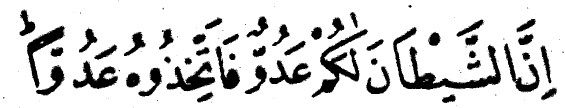
— Şeytan size düşmandır, siz de onu düşman tutun» (52).
Yani Allah'ın emrine uyarak şeytana karşı çıkın, yoksa Allah'ın emir-lerine karşı gelerek ona uymayın. Bütün tutumlarınızda, davranışlarınız-da ve inançlarınızda samimiyetle ondan sakının.
Yaptığınız her işte şuurlu olun. Çünkü onun içinize riya sokması çir-kin davranışları gözünüzde süslemesi her zaman mümkündür. Ona karşı koyarken Allah'dan yardım dileyin.
Abdullah îbni Mes'ud (R.A.) der ki. «bir gün Peygamber'imiz bize bir çizgi çizdi ve «işte bu, Allah'ın yoludur» dedi. Sonra onun sağından ve solundan birkaç çizgi daha çizdi ve şöyle dedi, «bunların her biri de birer yanyoldur, her birinin üzerinde bu yan yollara sapmaya çağıran birer şey-tan vardır.» Arkasından bize şu âyet-i kerimeyi okudu:
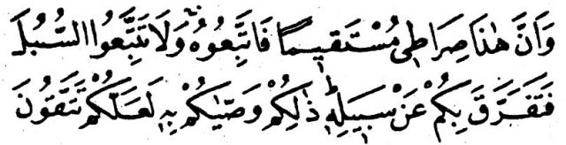
«Hiç şüphesiz, bu benim dosdoğru yolumdur, hep birlikte bunu takip ediniz. Yan yollara sapmayınız ki, O'nun dosdoğru yolundan sizi ayır-masınlar. Allah bunları size, kötülükten sakınasınız diye emretmekte-dir (53).
Âyeti okuduktan sonra, Peygamber'imiz (S.A.S.) bize şeytanın yolla-rının çokluğu hakkında açıklama yaptı.
Peygamber'imizden naklen bildirildiğine göre şöyle buyurmuştur. Beni İsrail zamanında bir rahip vardı şeytan bir genç kıza kasdederek onu bogor sonra da ailesine kızlarını rahibin tedavi edebileceğine inan-dırır, ailesi de kızı rahibe götürür.
Rahip önce kızı tedavi etmeye yanaşmaz, fakat ailesinin ısrarlarına dayanamayarak kabul eder. Tedavi için kız rahibin yanında bulunduğu sırada şeytan hemen rahibe koşar, onu kızın ırzına geçmeye teşvik eder» rahip bir müddet direnirse de sonunda şeytana yenilir ve hastasının ır-zına geçer, genç kız gebe kalır.
Bunun üzerine şeytan rahibe yeniden sokularak der ki, «kızın ailesi yakında gelir, durumu öğrenirler ise rezil olursun. En iyisi onu öldür, aile-si sorarlarsa «kızınız öldü» dersin. Rahip şeytanın teklifini kabul eder, genç kızı öldürerek gizlice gömer.
Bu sırada şeytan yine boş durmaz. Hemen genç kızın ailesine koşar, «rahip kızınızı önce gebe bıraktı, sonra da öldürüp gizlice gömdü» diye olup biteni anlatıp kalplerine vesvese eder.
Bunun üzerine kızın yakınları rahibe koşarlar, «kız nerede» diye so-rarlar, rahip şeytanın öğrettiği cevabı verir, «öldü» der. (Durumu gelme-den önce şeytandan öğrenen kız yakınları) rahibi yakalayıp götürürler, kızlarına karşılık onu öldürmeye karar verirler.
Bu sırada şeytan hemen rahibe koşar, «kızı boğulmasına ben sebep oldum, onu sana getirmelerini tavsiye eden de benim. Şimdi de benim de-diklerimi yaparsan seni onların ellerinden kurtarırım» der.
«Can korkusuna düşen rahip», «ne yapmamı istiyorsun» diye sorar. Şeytan, «bana iki kere secde edeceksin» der Çaresiz rahip şeytanın teklifini kabul ederek ona üstüste iki secde yapar, her şeyi istediği gibi sonuçlandıran şeytan ikinci secdeden başını kaldıran rahibe son sözlerini söyler, «seninle artık hiç bir ilgim yok» der ve kaybolur.
Ulu Allah (C.C.) bu hıssa hakkında şöyle buyuruyor:
— Yahudileri savaşa kışkırtan münafıkların sözleri, tıpkı şeytanın tu-tumu gibidir. Hani şeytan insana önce «küfret» dermiş de insan küfre-dince ben senden uzağım. Çünkü ben âlemlerin Rabb'inden korkarım» demişti.» (54).
Rivayete göre İblis bir gün İmam-ı Şâfi''ye (rehimehullahu) sorar, «ey İmam! Beni dilediği gibi yaratan ve dilediği yolda kullanan sonra da diler-se cennete koyacak ve dilerse cehenneme gönderecek olan Allah hak-kında ne düşünüyorsun, tutumunda adil midir, yoksa zalim mi?»
Şafiî onun bu sözüne düşünür sonra şöyle cevap verir «behey herif! Eğer seni senin arzuna uyarak yarattı ise sana zulmetmiştir, yok eğer kendi muradına binaen seni varetti ise O, yaptığından mes'ul değildir.»
Şeytan aldığı cevabın karşısında öyle perişan oldu ki, nerede ise ye-rin dibine geçeyazdı. Fakat çok geçmeden kendisini toparlayarak Şafiiye dedi ki, «ey İmam! Ben bu soru ile yetmiş bin abidin zihnini bulandırarak onları kulluk divanından çıkardım.»
Bilesin ki, kalb bir kale gibidir, şeytan da oraya girip onu ele geçir-mek, onu fethetmek isteyen bir düşman. Kaleyi düşmana karşı savunmak için onun kapılarından giriş yerlerinde ve gediklerinde nöbetçi bulundur-mak gerekir. Bu nöbetçilik ve muhafızlık görevini kaleyi iyice tanımayan-lar başaramaz.
Kalbi şeytanın vesveselerine karşı korumak, gereklidir, bu görev, her mükellefin omuzlarına yüklenmiş bir «farz-ı ayn»dir. Gerekli olan bir neticeye kendisi olmaksızın ulaşılmayan vasıta da gereklidir.
Şeytanın sızma yollarını bilmeksizin kalbi ona karşı savunmakta ba-şarıya ulaşılamaz. Demek ki, onun sızma yollarını bilmek farz oluyor Şey-tanın kaleye benzettiğimiz kalbe girmek için kullanacağı yollar ve sızma yerleri kulun bir takım sıfatlarıdır. Bunlar çoktur. Bazıları şunlardır:
1 — Öfke ve azgın istek.
Öfke, aklı ürkütüp kaçıran bir canavardır, akıl zayıflayınca şeytanın ordusu hücuma geçer. insan öfkelendikçe, çocuğun topla oynadığı gi-bi şeytan onunla oynar.
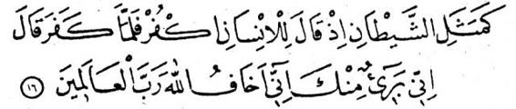
Anlatıldığına göre Allah'ın velilerinden biri İblise «ademoğlunun na-sıl yendiğini bana söyle» der. Şeytan da «öfke ve azgın arzuları kabar-dığı zaman onu ele alırım» diye cevab verir.
2 — Kıskançlık ve ihtiras.
İnsan bir şeye karşı ihtiras bağlayınca ihtirası, gözünü kör ve ku-lağını sağır eder. Böyle olunca da şeytana aradığı fırsat verilmiş olur. Aslında kötü ve çirkin de olsa, arzusuna vardıran her vasıta,muhterisin gözüne güzel gelir.
Rivayete göre Hz. Nuh (A.S.) Allah'ın emrine uyarak her canlı türün-den birer çift alarak gemiye bindiği zaman tanımadığı bir ihtiyarın ge-minin bir köşesine sindiğini görür, ona «gemiye niye girdin» diye so-rar. İhtiyar «adamlarının kalblerine sızmak için girdim, öylece kalbleri benim elimde kalırken senin yanında sadece vücudları kalacak» diye ce-vap verir.
Bu cevap üzerine ihtiyarın kimliğini teşhiste gecikmeyen Hz. Nuh, «defol buradan,, ey Allah'ın düşmanı, sen mel'un şeytandan başkası de-ğilsin» diye onu kovmak ister.
Bu sırada İblis, Hz. Nuh'a «ben insanları beş şey vasıtası ile helâke sürüklerim, şimdi üçünü sana anlatacağım. Fakat geri kalan ikisini söy-lemem» der.
O anda ulu Allah Hz. Nuh'a «sana ikisini söylesin, geriye kalan üç tanesi mühim değil» diye vahiy gönderir. Bunun üzerine Hz. Nuh şeyta-na «ikisini söyle yeter» der. Şeytan Hz. Nuh'a şu karşılığı verir, «o ikisi öyle vasıtalardır ki, beni hiç yalancı çıkarmamışlardır, hiç bir zaman beni hedefimden geri bırakmamışlardır, insanları bunlar sayesinde mahvede-rim. Bunlar ihtiras ve kıskançlıktır. Kıskançlık yüzünden ben kendim lâ-netlenerek kovuldum. İhtirasa gelince, bir ağacın meyvası dışında cen-netteki her şey Adem'e mubah kılınmıştı, ihtirasını alevlendirerek onu yasak ağacın meyvasından yemeye iknâ ettim.»
3 — Oburluktur.
İsterse yenen yemek sırf helâl olsun. Çünkü oburluk nefsin aşı-rı isteklerini güçlendirir, aşırı arzular da şeytanın silahlarıdır.
Rivayete göre bir gün İblis Hz. Yahya'ya (A.S.) görünür, elinde çe-şitli maddelerden yapılmış bir yular tomarı vardır. Hz. Yahya «bu yular-lar nedir» diye sorar. Şeytan «bunlar insanları yakalamaya yarayan çeşit çeşit arzulardır» diye cevap verir.
Hz. Yahya şeytana «içlerinde bana ait olanı var mı» diye sorar Şey-tan der ki, «galiba bir keresinde karnını tıka-basa doyurmuştun da seni böylelikle namazdan ve zikirden alakoymuştuk» Hz. Yahya «başka bir şey var mı» diye sorar. Şeytan «hayır» der.
Bunun üzerine Hz. Yahya «bir daha karnımı tıka-basa» doldurma-mak, bundan sonra boynumun borcu olsun» der.
Şeytan da Hz. Yahya'ya «andolsun ki, bundan sonra bende hiç bir müslümana nasihat etmeyeceğim» diye k arşılık verir.
4 — Bu huylardan biri de elbise, ev mobilyada süs düşkünlüğüdür.
Şeytan insanın kalbinde süse düşkünlük olduğunu görünce, bu yol-dan tohum atar ve tohumların yumurtlamasını sağlar. Şeytan böyle şey-lere karşı zaafı olan kimseyi durmadan yeni evler yapmaya, yapıların duvar ve tavanlarını türlü türlü geleneklere göre süslemeye ve odaların genişletmeye çağırır, çeşit çeşit kıyafetler ve binek hayvanları ile bezen-meye davet eder ve insanı ömrü boyunca bu çeşit arzuların esiri halinde tutar.
Zaten bu yolda şeytan insanı bir kere kandırdıktan sonra ikinci bir sefer onu ele alması gerekmez, çünkü bu zaafların biri diğerini çeker, ku-lun ömrü doluncaya kadar bu yolda yürür, nihayet günün birinde şeyta-nın yolunda ve doyumsuz arzuların emrinde iken ölüverir.
Böyle kimselerin akibetinin kötü olmasından korkulur. Allah hepimi-zi korusun!
5 — Bu huylardan biri insanlara umut bağlamaktır.
Sefvan îbni Selim (R.A.) der ki, «bir gün Abdullah İbni Hanzele'ye İblis görünür ve der ki, «ya İbni Hanzele! Sana bir şey öğretmek istiyo-rum» İbni Hanzele «ihtiyacım yok» diye karşılık verir.
Şeytan ona «bir dinle de bak, eğer yararlı ise kabul eder, değilse reddedersin» Ey İbni Hanzele, Allah'dan başka hiç kimseden kesin ürnid bağlayarak bir şey isteme. Kızınca ne hale düştüğünü gör, çünkü öfke-lendiğin zaman seni kolayca ele geçiririm.»
6.— Bu huylardan biri acelecilik ve sebatsızlıktır.
Peygamber'imiz (S.A.S.) buyuruyor ki: — Acelecilik şeytandan ağır davranmak ise Allah'dandır.» Çünkü insan aceleye kapılınca, şeytan ona, hiç ummadığı taraftan kötülüğünü benimsetir.
Rivayete göre Hz. İsa (A.S.) doğduğu zaman, yandaşları derhal ibli-se koşup derler ki, «yeryüzünde bütün putların başı eğildi» Şeytan onla-ra «olan oldu, siz yerinizde kalın» diyerek hemen uçuşa geçer. Yeryüzünün altını üstüne getirir, putların boyun eğmesine sebep olan olayı öğ-renemez.
Sonunda Hz. İsa'nın (A.S.) doğduğunu tesbit eder, çevresini bütün meleklerin kuşattığını görür. Bunun üzerine hemen yandaşlarının yanına döner ve onlara şöyle der, «dün gece dünyaya bir peygamber geldi, bu çocuk hariç, hiç bir gebelik ve doğum hadisesi olmamıştır ki, ben yanında bulunmayayım. Bu geceden sonra artık putlara tapılmaz, bundan ümidi-nizi kesin. Bundan sonra ademoğullarına acelecilik ve densizlik yolu ile sokulmaya bakın.»
7 — Bu huylardan biri para ve mal düşkünlüğüdür.
Yiyecek - içecek ile diğer zarurî ihtiyaçların ötesinde kalan bütün varlık, hayvanat ve akabat şeytanın konağıdır.
Sabit ül-Bünananî (R.A.) der ki, «Peygamber'imize (S.A.S.) peygam-berlik görevi verildiği zaman İblis şeytanlarına şunu söyledi, «bir şey ol-du, ama nedir bilmiyorum, gidin iyice öğrenin.»
İblis'in adamları her tarafı araştırdılar, fakat ne olduğunu öğrene-meyerek geri döndüler, «bir şey öğrenemedik» dediler. Bunun üzerine İblis «ben size şimdi haber getiririm» diyerek kayboldu.
Bir müddet sonra çıkageldi ve adamlarına «Allah, Hz, Muhammed'i peygamber olarak görevlendirmiştir» dedi.
Bundan sonra İblis adamlarını Peygamber'imizin sahabilerine (Allah onlardan razı olsun) göndermeye başladı, fakat hepsi her seferinde eli boş ve hayal kırıklığı içinde dönüyorlardı, dönüşte sözleri şunlar oluyor-du, «hayatımızda bir gün böyle adamlarla karşılaşmadık, tam yanlarına sokuluyoruz, namaza kalkıyorlar, böylece bütün gayretlerimiz boşa çı-kıyor.»
Bu sözleri dinleyen İblis adamlarına şöyle dedi. «onları bir müddet kendi hallerine bırakın, Allah'ın izni ile yakında bütün dünyayı fethede-ceklerdir, o zaman biz de onlardan istediklerimizi sızdırırız.»
Rivayete göre Hz. İsa (A.S.) bir gün bir taş parçasını yastık edine-rek yere yaslanıp bu sırada yanına gelen şeytan,ona «ya İsa! Galiba dünyadan hoşlanıyorsun» der.
Bunun üzerine Hz. İsa (A.S.) taşı başının altından kaldırıp atar ve şeytana «dünya ile birlikte bu da senin olsun» der.
8 — Bu huylardan biri de cimrilik ve yoksul düşme korkusudur.
insanı fakirlere yardım etmekten, sadaka vermekten alakoyan, bi-riktirme ve varlık yığma hırsını kışkırtarak neticede acı azaba sürükle-yen bu huydur. Pintiliğin afetlerinden biri mal biriktirmek için çarşı -pazar dolaşmaktır. Zaten böyle yerler şeytanların cirit attıkları yerler-dir.
9 — Bu huylardan biri taassub.
Kendi görüşlerine körü - körüne bağlanmak, karşı taraftakilere kin beslemek onlara küçümseyen bakışlarla bakmaktır»
Bu tutum, cemiyetin hem iyilerini ve hem de kötülerini birlikte helâ-ke sürükler.
Hasan ül-Basrî der ki, duyduğumuza göre İblis şöyle demiş «Mu-hammed'in ümmetini ayartarak bazı günahlara soktum, fakat Allah'dan af dileyip kusurlarını bağışlatarak belimi kırdılar. Fakat ben onlara öyle günahlar işletiyorum ki, onlar için Allah'dan af dilemezler. Bunlar boş arzu ve heveslere kapılarak burunlarının doğrusuna gitmeye dayanır.»
Şeytan doğru söylüyor. Böyleleri, saplantıları yüzünden günahlara sürüklendiklerini bilmezler ki tevbe etsinler.
10— Bunlardan biri Müslümanlara su-i zânda bulunmaktır.
Bundan hatta kötüleri itham etmekten bile kaçınmak gerekir. Her-kesin kusurunu okuyarak, onun-bunun hakkında kötü düşünceleri ileri sü-ren kimse gördün mü, bilesin ki, onun, içi pistir ve kendi iç pisliği, dışına sızmaktadır.
Şu halde insan şeytanın içeri girmesini önlemek için kalbinin bu ka-pılarını kapatmalı. Bunlara karşılık Allah'ı zikretmesine yardımcı olma-lıdır.
İbni İshak (rehimehullahu) şöyle der: Kureyş kâfirleri sahabîlerin Mekke'den Medine'ye hicret ettiğini görünce ve Peygamber'imizin (S.A.S.) yeni taraftarlar kazandığını duyunca O'nun gücünden korkmaya başladı-lar, çünkü O'nun kendileri ile savaşmak üzere ordu topladığını anlamış-lardı.
Bunun üzerine her zamanki toplantı yerleri olan Kuzey İbni Kılâb'ın evi olan (Dar'ül Nedve'de), durumu görüşmek için biraraya geldiler. Kabile-nin bütün kararlan bu evde yapılan toplantılarda alındığı için ona bu isim verilmiştir. Kureyş herşeye mutlaka burada karar verirdi. Bu toplantılara kırk yaşını doldurmamış Kureyş'li olmayanlar alınmazdı.Kureyşliler de bu şart aranmazdı.ebü Cehil'in başkanlığında bir cumartesi günü toplanmışlardı. Bundan dolayıdır ki; cumartesi günü Mekir ve Hiyie günüdür» buyurulmuştur Necd'li bir ihtiyar kılığına girmiş olan İblis aralarında bu-lunuyordu İblis'in aralarına girmesi şöyle oldu. İpek bir cübbe veya tay-lasan giyerek alımlı bir ihtiyar kılığında kapıda belirmişti.
Münafıklar bu «ihtiyar kimdir» diye sordular. İblis cevap verdi, «Necd li bir adam, ne için toplandığınızı duydum da söyleyeceklerinizi dinleme-ye geldi, bazı noktalarda size fikir verme ve nasihatlerde bulunma ihti-mali de vardır.» Bunun üzerine ona «içeri gir» dediler, o da girdi ve ko-nuşmalara katıldı.
Peygamber'imize (S.A.S.) ne yapılması gerektiği konusunda tartışıyorlardı, yüz kişi idiler, bir rivayete göre ise onbeş kişi idiler. İleri gelen-lerinden biri olan Ebul Buhteri —ki kâfir olarak Bedr savaşında öldü-şu görüşü ileri sürdü, «O'nu zincire vurup hapsedin, kapıyı üzerine kit-leyin ve bundan sonra O'ndan evvel gelip geçmiş şair ve büyücülerin başına gelen akıbetin O'nun da başına gelmesini bekleyin (yani zin-danda ölmesini bekleyin).»
Necd'li ihtiyar (yani aslında şeytan) bu fikre karşı çıkarak der ki, «bu fikir isabetli değildir, Allah'a yemin ederim ki, eğer siz O'nu zin-cire vurup hapsedecek olsanız, daha üzerine kapıyı kapatır-kapatmaz başına gelenleri adamları duyacak, hemen baskın düzenleyip O'nu eli-nizden alacaklar, sonra da karşınızda hindi gibi kabararak mukaveme-tinizi kıracaklardır, o yüzden bu fikir isabetli değildir, başka bir çare dü-şünün.
İleri gelenlerden bir diğeri olan Ebul Esved Rabia Bin Amrül Amiri şu görüşü ileri sürer, «O'nu aramızdan çıkarır, beldemizden sürelim ne-reye isterse gitsin, hiç ilgilenmeyelim.»
Necd'li (Allah'ın lâneti üzerine olsun) bu görüşe de derhal karşı çıkar ve der ki, «Vallahi bu da çıkar yol değildir. Ne güzel konuştuğunu, ne kadar çekici bir mantığa sahip olduğunu ve ileri sürdüğü yeni gö-rüşler ile herkesin kalbini ne biçim büyülediğini görmüyor musunuz?
Eğer O'nu buradan kovacak olursanız, bir arap kabilesine varıp araya yerleşebilir, onları tatlı dili ile kandırarak size karşı kışkırtabilin Sonra da toplayacağı bir ordu ile üzerinize yürüyerek elinizden iktidarı alabilir ve size istediğini yapabilir
O'nun hakkında başka bir çare düşünmelisiniz.»
Bunun üzerine meşhur Ebul Cehl söz alarak der ki, «vallahi, O'nun hakkında benim bir fikrim var, ama sizin sözleriniz buna uzak kalıyor. Ba-na kalırsa her kabileden gözü pek, atılgan, becerikli birer delikanlı seçe-ceksiniz, ellerine birer keskin kılıç vereceksiniz, üzerine çullanacaklar, hepsi bir adam vuruyormuş gibi, ayni anda kılıçlarını çekip üzerine in-direcekler ve nefes almaya fırsat vermeden canını alacaklar, böylece O'ndan kurtulmuş oluruz.
Bütün kabileler suç ortağı olacağı için O'nun kabilesi olan Abdül Menaf kabilesi, diğerlerinin tümüne karşı O'nun kan davasını gütmeye cesaret edemezler, hep birlikte diyetini veririz, olur-biter.»
Necd'li ihtiyar. (Allah'ın lâneti üzerine olsun) Ebul Cehl'in sözü bi-tince der ki, «görüş budur, başka çare göremiyorum
Böylece o toplantıda Peygamber'imizi (S.A.S.) öldürmeye karar ve-rerek dağıldılar.Fakat bu sırada Cebrail (A.S.) Peygamber'imize (S.A.S.) gelerek «bu gece her zamanki yatağında yatman diye talimat verir.
Gece olunca Kureyş kâfirlerinin seçkin silâhşörleri Peygamber'imi-zin evi önünde pusu kurdular, uyumasını gözetliyorlardı, uyuyunca üze-rine çullanacaklardı.
Öte yandan Peygamber'imiz (S.A.S.) Hz. Ali'yi (keremellahu vec-hehu) o gece yatağında yatmakla görevlendirdi, Hz. Ali bu hadiseden sonra Peygamber'imizin cuma ve bayramlarda giyindiği yeşil bir paltoyu üstüne çekerek yatağa uzandı. Böylelikle Hz. Ali (kerremellahu vechehu» kendini Allah'a adayarak Peygamber'imizin hayatını kurtaran ilk müslü-man oldu. Bu konuda bizzat Hz. Ali'nin söylediği bir şiir şöyledir:
Kendini ileri sürerek toprağa ayak basanların en hayırlısını korudum
Beytül Atık'a ve Hacerul Esved'i tavaf edeni.
O Allah'ın Resul'üdür, O'na tuzak kurmalarından çekinmişti.
Kudret eli her yere uzanan ulu Allah O'nu tuzaktan korudu.
Allah'ın Resul'ü, mağarada güven içinde geceyi geçirdi.
Allah'ın örtü ve himayesi altında saklanarak
Ben ise onları ve bana yapabileceklerini bekleyerek geceyi geçirdim. Kendimi ö!üme ve esarete adamıştım.
O gece Peygamber'imiz (S.A.S.) silâhşörlerin önünde evden çıktı, Allah onların gözünü kararttığı için hiç biri O'nu göremedi, Peygambe-r'imiz «Yasin» suresinin şu kısmını okuyarak onların her birinin başına daha önce avucuna almış olduğu toprağı saçmıştı. Peygamber'imizin okuduğu âyetler şunlardır. Ulu Allah buyuruyor ki:
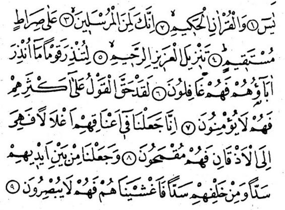
— YASİN, Hikmet dolu Kur'an hakkı için, hiç şüphesiz, san pay* gamberferden birisin, dosdoğru yol uyarınca. O kitab (Kur'an), gücü her şeye yeten, bağışlayıcı tarafından indirilmiştir, ataları ikaz edilmemiş olan bir kavmi ikaz etmek için. Onların çoğu üzerinde söz (hüküm) gerçekleşti, onlar artık iman etmezler.
Biz onların boyunlarına, çenelerine kadar dayanan tasmalar taktık, bu yüzden başlarını sağa- sola çeviremezler. Ayrıca biz onların önlerine ve arkalarına birer set çektik ve onları örttük, bundan dolayı göremezler» (55).
Böylece Peygamberimiz (S.A.S.) evden ayrılarak dilediği yere yolcu öldü.
Bu sırada silâhşörlerin yanina, daha önce aralarında bulunmayan bir yabancı geldi, onlara «burda ne bekliyorsunuz» diye sordu. Silâhşörler «Muhammedi» diye cevap verdiler. Yabancı onlara dedi ki. tAllah sizi hayal kırıklığına uğrattı. Vallahi O, sizin önünüzden geçip gitti. Giderken de her birinizin başına toprak serpti ve dilediği yolu tuttu. Başınızın üstüne bakasanız a!.»
Bunun üzerine herkes eli ile başını yokladı, tepelerine toprağın ser-
pitdiğini gördüler. Hemen pusudan çıkarak Peygamberimiz (S.A.S.)'ın odasına girdiler, ve Hz. Ali'yi (kerremellahu vechehu) Peygamberimizin paltosuna bürünmüş yatakta buldular, «vallahi, bu Muhammed'dir, işte, paltosuna bürünmüş, uyuyor» dediler. ,
Bu düşünce ile sabahladılar, fakat yataktan Hz. Ali (keremellahu vechehu) kalktı. O zaman «bizimle geceleyin konuşan yabancı doğru söylemiş» dediler. Kur'an-ı kerimin şu âyeti bu konuda indi. Ulu Allah şöyle buyuruyor:
—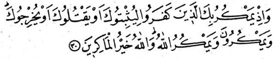Hani bir keresinde o kâfirler, ya öldürmek veya sürmek üzere seni tutuklamak için tuzak kurmuşlardı. Onlar tuzak kurarlar, ama Allah onların tuzağını boşa çıkarır. Hiç şüphesiz Allah tuzaklarını en hayırlı şekilde boşa çıkarandır» (56).
Bu konuda bir şair şöyle der: Canını sıkma! Zorluğun arkası kolaylıktır. Her şeyin bir vakti ve takdiri vardı^
Takdir sahibi, bizim halimizi şüphesiz görüyor Bizim tedbirimizin üstünde Allah'ın tedbiri vardır.
Bu olayın arkasından ulu Allah Peygamber'imizin Mekke'den Medi-ne'ye göç etmesine izin verdi. İbni Abbas (R.A.) «ey Rabb'im! Bana doğ-ru şekilde girip doğru şekilde çıkmak nasib eyle, bana kendi nezdin-den yardıma bir kılavuz ihsan eyle» âyet-i kerimesinin tefsiri sırasında «Cebrail, Peygamber'imize yanına Hz. Ebu Bekr'i almasını emretti» der.
Hakim, Hz. Ali'ye dayanarak rivayet eder ki, Peygamber'imiz (S.A.S.) göçme emrini aldığı zaman Cebrail'e «yanımda kim olacak>> diye sorar, Cebrail (A.S.) de «Hz. Ebu Bekr» diye cevap verir. Öteyandan Peygam-ber'imiz çıkışını Hz. Ali'ye bildirdi, yanında bulunan emanetleri sahiple-rine teslim etmek üzere onu yerine bıraktı.
Hz. Ayşe (R. Anha) hicret olayını şöyle anlatır: Bir gün biz Ebu Bekr'in (babamın) evinde otururken kuşluk sıraları, aşağı - yukarı günün en sıcak saatlerinde Peygamber'imizin eve doğru geldiğini gördüm.
Hz. Ebu Bekr'in diğer bir kızı olan Hz. Esma (R. Anha) ise Taberanî'-nin rivayetine göre olayın bu kısmı hakkında şunları söylemektedir. «Re-sulüllah. Mekke'de iken biri sabah, öbürü akşamleyin olmak üzere günde iki defa bize gelirdi. O gün ise (hicret öncesi günü) kuşluk vakti eve gel-mekte olduğunu görerek babama dedim ki, «babacığım, şu gelen Resu-lüllah, başını sarmış, buraya doğru geliyor, oysa ki bu saatte bize gel-mek huyu değildi.»
Hz. Ebu Bekr, Esma'nın sözlerine şöyle cevap verdi» «anam-babam O'nun uğruna feda olsun, yemin ederim ki, bu saatte O'nu buraya gel-meye mutlaka mühim bir olay sevketmiştir.»
Bundan sonra olanları Hz. Ayşe şöyle anlatmaya devam ediyor, «Re-sulüllah kapıya geldi, içeri girmek için izin istedi, Hz. Ebu Bekr izin verin-ce içeri girdi. Ebu Bekr oturmakta olduğu sedirden inerek O'na yer ver-di. Oturunca Ebu Bekr'e «yanındakileri dışarı çıkar» dedi. Ebu Bekr «bun-lar senin ev halkındır yani Ayşe ile Esma'dır dedi.
Başka bir rivayette ise «yabancı yok. İki kızım var burada» diye ce-vap verdi. Bunun üzerine Peygamber'imiz (S.A.S.) söze girerek Ebu Bekr'e «göç etmeme izin verildi» dedi. Hz. Ebu Bekr «ana-babam uğruna feda olsun, benim de yanında gelmemi istiyor musun? diye sordu. Peygam-ber'imiz «evet» dedi.
Bu sırada Ebu Bekr'in ağladığını gördüm, o zamana kadar hiçbir kim-senin sevincinden ağlayacağını sanmazdım.
Hz. Ebu Bekr (R.A.) Peygamber'imize (S.AS.) «anam-babam yoluna feda olsun, şu iki binek hayvanımdan birini kendine al» dedi. Peygam-ber'imiz (S.A.S.) «eğer parası ile satmaya razı olursan alırım» diye ce-vap verdi.
— 98 —
Bir rivayette: (Dilersen kıymetini verir alırım) buyurdu, binek hayva-nın ancak para karşılığında kabul etmesi, Allah yolunda yapacağı göçün hem mal ve hem de beden ile işlenen bir ibadet haline gelerek eksiksiz bir mahiyet kazanmasını istemesinden ileri geliyordu.
Hemen yol hazırlıklarına giriştik, azık torbalarını hazırladık içine bir pişmiş koyun koyduk. Kız kardeşim Esma bel kuşağından bir parça ke-serek dağarcığın ağzını bağladı, bu yüzden adı ondan sonra «çift kuşak-lı» diye kaldı.
Böylece yola çıkan Rasûlüllah (S.A.S.) ile Ebû Bekr (R.A.) «Sevr» mağarasına vardılar, üç gün burada saklandılar. «Sevr» Mekke yakınla-rındaki bir dağın adıdır, oraya ilk defa çıkan Sevr İbni Abdü'l-Menat'ın adına izafeten bu ismi almıştır.
Diğer bir rivâyete göre Rasûlüllah ile Ebû Bekr, evin arka kapısından çıkarak yola koyuldular. Yine bir rivâyete göre yolda Ebû Cehl ile karşılaş-tılar, fakat onları onun gözlerinden Allah sakladı ve o farketmeden geçip gittiler.
Hz. Esma (R. Anha) der ki, «Hz. Bekr, beş bin dirhem olan bütün parasını yanına alarak bu yolculuğa çıkmıştır.»
Kureyş'liler Peygamber'imizi (S.A.S.) ellerinden kaçırınca, Mekke'-nin her tarafını aradılar, altını üstüne getirdiler. Her tarafa iz sürücüler çıkardılar. Mağaranın yolunu tutan iz'ciler, onların izlerini tesbit ettiler ve mağaranın ağzına kadar izlerini sürdüler.
Peygamber'imizi ellerinden kaçırmak, Kureyş'lilere ağır geldi, bu işe canları çok sıkıldı, bu yüzden O'nu yakalayana yüz deve adadılar.
Kadı İyad'dan (R.A.) rivâyet edildiğine göre Sebir Dağı Peygamberi-mize «Yâ Rasûlüllah! Benden kaç, çünki üzerimde iken öldürülmenden ve o yüzden Allah'ın lânetine uğramaktan korkuyorum» diye seslendi. Buna karşılık Hıra Dağı da «Bana gel, yâ Rasûlellah!» diye O'na seslendi.
Rivâyete göre Peygamber'imiz ile Ebû Bekr (R.A.) mağaraya girince Allah'ın emri ile mağaranın ağzında hemencecik bir «ummu gayicn» ağacı bitiverdi ve bu ağacın varlığı mağaranın yolunu kâfirlerin gözlerinden sakladı. Öte yandan ulu Allah, örümceğe mağaranın ağzını ağla örmesini emretti, bir çift yabanî güvercin de yine kapıda yuva kurdular.
Bunların hepsi müşrikleri mağaraya girmekten alakoydu. Yine rivâ-yete göre, bugün Harem-i Şerif'de görülen güvercinler o çiftin soyundan gelir. Peygamber'imize sağlamış oldukları himayenin karşılığında, nesil-lerinin artması ve Harem'de avlanma tehlikesinden uzak olarak güven içinde yaşamakla mükâfatlandırıldılar.
Kureyş kabilesinin her öbeğinden seçilen delikanlılar, elleri sopalı, baltalı ve kılıçlı olarak mağaranın kapısına dayandılar. Aralarından biri
ayrılarak mağaranın ağzına sokuldu, orda yuva yapmış bir çift güvercini görünce arkadaşlarının yanına döndü, Ona «Ne var, ne yok» dediler, o da «Kapıda iki yabanî güvercin görünce içerde hiç kimsenin bulun-madığını anladım» diye karşılık verdi. Peygamber'imiz (S.A.S.) bu ko-nuşmayı içerden duydu ve Allah'ın düşmanlarını savdığını anladı.
Buna rağmen delikanlılardan biri «içeri girin» dedi. Fakat onlardan biri olan Ümeyye İbni Half ona şu cevabı verdi, «içeri girip ne yapacak-sınız. Kapı Muhammed'in doğumundan bile daha eski bir örümcek ağı ile örülmüş, eğer O içeri girmiş olsaydı yumurtaların kırılmış ve ağın parçalanmış olması gerekirdi.»
Bu durum Kureyşlileri askeri harekâta girişmekten kesinlikle ala-koydu. Görüyor musun, ağaç, arananı nasıl saklayarak kovalayanı şa-şırttı, öte yandan örümcek geldi, mağara kapısını perdeledi,boşluğun yüzünü ağı ile örerek iz'cilerin gözünü bağladı da aramaktan caydılar. Böylelikle örümcek Peygamber'imizi (S.A.S.) koruma şerefi kazandı. İbni Nakîb'in bu husustaki şiiri ne kadar güzeldir:
«İpek böceği koza örer, her çeşit elbiseye yakışır. Fakat örümcek ondan daha üstündür, Peygamber'in başına ördüğü ağ sayesinde..,»
Buharî ile Müslim'in Hz. Enes'den rivâyet ettiğine göre şöyle demiştir: Ebû Bekr (R.A.) bana şöyle dedi, «Mağarada iken Peygamber'imize «eğer iz'cilerden biri ayaklarının ucuna baksaydı bizi görecekti» dedim, O bana «Sen bu iki kişiyi ne sanıyorsun» bunların üçüncüsü Allah'dır», diye ce-vap verdi.»
Siyer yazarlarından birine göre Hz. Ebû Bekr, Peygamber'imize «Bun-lardan biri ayak parmaklarının ucuna baksa bizi görecekti» dediği zaman Peygamber'imiz ona şöyle cevap verdi: «Onlar o taraftan bize doğru gel-selerdi,, biz de bu taraftan giderdik.»
Hz. Ebû Bekr, Peygamber'imizin gösterdiği tarafa bakınca mağara-nın açıldığını, bir denizin belirdiğini ve bir geminin karaya yanaşmış dur-duğunu gördü.
Hasan'ül - Basrî'den rivâyet edildiğine göre Peygamber'imiz ile Hz. Ebû Bekr, gece mağaraya doğru yol alırlarken Hz. Ebû Bekr, Peygam-ber'imizin bazan önünden bazan da arkasından yürüyordu. Peygamber'i-miz O'na bu davranışının sebebini sorunca Ebû Bekr (R.A.) şu cevabı ver-di, «Kılavuzluk aklıma gelince önün sıra yürüyorum, sonra gözetleme gö-revimi hatırlayınca geride kalıp arkan sıra yürüyorum.» Peygamber'imiz O'na «Başımıza bir hal gelse benim uğruma seve seve ölür müsün?» diye sordu. Ebû Bekr, «Seni, Hakkı tebliğ etmek üzere gönderene (Al-lah'a) yemin ederim ki, evet» diye cevap verdi.
Mağaraya vardıklarında Ebû Bekr, Peygamber'imize «Olduğun yer-de dur, yâ Rasûlellah, ben mağarayı senin için temizleyeyim» dedi ve öteyi-beriyi temizlemeye koyuldu. Mağaranın zeminini el yordamı ile yoklarken rastladığı her deliği paltosundan bir parça keserek tıkıyordu, böyle böyle paltosunu bitirdi, fakat son bir delik açık kaldı, onu da her hangi bir canlı çıkıp Peygamber'imizi ısırmasın diye topuğu ile tıkadı.
Bundan sonra Peygamber'imiz içeri girdi, başını Ebû Bekr'in dizine dayayarak uykuya daldı, o sırada bir canlı Ebû Bekr'in topuğunu ısırdı, fakat Peygamber'imizi uyandırmamak için kımıldamadı, acıdan gözleri yaşarınca damlalardan biri Peygamber'imizin yüzüne aktı ve O'nu uyan-dırdı. Peygamber'imiz Ebû Bekr'e «Ne oluyor sana» diye sordu, «Anam -babam yoluna feda olsun, ısırıldım» diye cevap verdi. Peygamber'imiz so-kulan yere tükürük bastı ve acısı dindi. Meşhur İslâm Şâiri Hassan İbni Sâbit (R.A.) bu mevzûda ne güzel söyler:
«O şerefli, mağaradaki iki kişinin ikincisi idi,
O ikisi dağa çıkınca, düşman oranın her tarafını aradı.
Düşmanlar bütün canlılardan öğrendiler ki;
Peygamber'imize karşı duyulan sevginin dengi yoktur.»
Peygamber'imiz Mekke'den perşembe günü yola çıkmıştı, mağaradan da Pazartesi gecesi ayrılmış olmalıydı, çünki orada üç gece kaldı. Bu olay Rebiülevvel ayının başlarında meydana geldi, Rebiülevvel ayının onikinci Cum'a günü ise Medine'ye vardı.
Anlatıldığına göre adı Zekeriyya olan bir Zâhid şiddetli bir hasta-lığa yakalanır, ölmek üzeredir, son demlerinde bir arkadaşı başına gelir ve ona «Lâilâhe illellah, Muhammed'ür - Rasûlüllah» demeyi telkîn eder, fakat zâhid bu telkînı yüzünü ekşiterek reddeder.
Arkadaşı ikinci sefer telkîn eder, zâhid yine yüzünü çevirir, arkada-şının üçüncü telkînini ise «hayır, söylemiyorum» diye sözlü olarak red-deder. Arkasından bayılır, başı arkadaşının dizleri üzerine düşer, bir müd-det böyle kalır, arkasından biraz açılır ve gözlerini açınca «bana bir şey dediniz mi?» diye sorar, ona «evet, sana üç kere Kelime-i Şehâdet ge-tirmeni telkîn ettik. İki keresinde yüzünü döndün, üçüncüsünde de, «söy-lemiyorum» diye cevap verdin» derler
Zâhid onlara durumu şöyle açıklar, «Bana İblis geldi, elinde bir bar-dak su vardı, sağımda durdu, bardağı sallayarak «su ister misin?» dedi, «tabiî» dedim. Bunun üzerine «İsa Allah'ın oğludur» dedi, o yüzden yü-zümü öbür tarafa çevirdim.
Sonra ayak uçlarımdan yana bana sokuldu, ayni sözü söyledi, ona yine yüzümü döndüm. Üçüncü defa bana ayni cümleyi tekrar ettirmek is-teyince «hayır, söylemiyorum» diye cevap verdim. İşte o zaman su dolu bardağı hırsından yere çaldı ve ortalıktan kayboldu.
İşte ben şeytanı reddettim, yoksa sizin telkîninizi değil, şimdi söy-lüyorum: «Eşhedü ellâilâhe illellâh ve eşhedü enne Muhammeden abdühu ve rasûlühü.»
. Rivâyete göre Ömer - Bin Abdülâziz (R.A.) der ki, «Sâlihlerden biri. şeytanın insanoğlunun kalbinin neresinde olduğunu kendisine göster-mesini Allâh'dan ister.Bunun üzerine rüyada içi dışından görünen yarı şeffaf bir insan vücudu görür, adamın başı omuz ile kulağı arasındaki boşlukta ve sol omuzu üzerinde kurbağa şekline girmiş olarak şeytanı görür, uzun ince bir hortumu vardır, onu adamın omuzundan kalbine uzat-mıştır, bu yoldan oraya vesvese akıtmaktadır. Fakat, adam Allah'ın adını andığı zaman kurbağa kılığına girmiş olan şeytan görünmez oluyor.» . Allah'ım! Lânetlik şeytanı ve kıskançların dilini üzerimize musallat eyleme, Peygamberlerinin sonuncusu olan Hz. Muhammed (SAV.) hür-metine sana zikir ve şükürde bulunmamıza yardım buyur.
— 102 —
ONALTINCI BÖLÜM BITTI
(52) Kur-an-ı Kerim/ En'am Sûre-i Celilesi. 153.
(53) Kur'an-ı Kerim/En'am Sûresi, 53
(54) Kur'an-ı Kerim/Haşr Sûresî. 16
(55) Kur'an-ı Kerim/Yasin Sûresi, 1-9
(56) Kur'an-ı Kerim/Enfal Sûresi. 30
Rivayete göre Muhammed Ibni Münhedir, söyle der:
«Babamin bana söyle anlattigini hatirliyorum:
Bir defa Süfyan'üs - Sevrî, Harem-i Serifi tavaf ederken her adim basinda Peygamberimize (S.A.S.) salâtü selâm getiren bir adam görür, der ki: «Behey adam! Sen tesbih ve tehlili birakmissin, kendini tamamen Peygamber'imize salât-ü selâm getirmeye vermissin, bu husûsda bir bildigin mi var?» dedim.
Bana «Allah (C.C) günahini bagislasin, sen kimsin?» diye sordu, ona «Süfyan'üs - Sevrî'yim» diye cevap verdim. Bunun üzerine bana sunlari söyledi: «Eger sen zamaninin en büyük zahidi olmasaydin sana durumumu anlatmaz, seni sirrima ortak etmezdim. Simdi dinle:
Babamla birlikte hacc için yola çikmistik, konak yerlerinden birinde babam hastalandi, yolculuktan geri kalarak onun durumu ile ilgilendim. Fakat sonunda öldü, ruhu çikinca yüzü kapkara kesildi.
Ben dehsete kapilarak «Innâ lillâhi ve innâ ileyhi raciun» (Hiç süphe siz biz Allah içiniz ve O'na dönecegiz) dedim ve yüzünü örttüm.
Bu sirada göz kapaklarim agirlasti, üzgün bir ruh hali içinde uykuya daldim. Rüyada, bu kadar güzel yüzlüsünü, bu kadar temiz kiliklisini ve bu derecede hos kokulusunu heyatta görmedigim birini gördüm, agir adimlar ile yürüyerek babamin yanina sokuldu, kefeni yüzünden kaldirarak avucunu çehresinin üzerinden geçirir geçirmez, babamin yüzü agariverdi. Sonra, yerinden kalkmis, gidiyordu, elbisesinin ucuna asilarak "Ey Allah (C.C)'in kulu. kimsin sen ki bu gurbet elinde Allah (C.C) seni babama ihsan buyurdugu ni'mete vâsita kilmistir" diye sordum. Bana söyle cevap verdi: «Beni tanimadin mi? Ben Abdullah oglu Muhammed (S.A.V)'im, Kur'ân'm sahibi.
Baban günahkâr bir kimse idi, fakat bana çok salât-ü selâm getirirdi. Ölürken basina bu hal gelince benden imdad istedi, ben ise üzerime salât-ü selâm getirenlerin imdadina hemen kosarim.»
Bu sirada uyandim, bir de baktim ki, babamin yüzü gerçekten bembeyaz oldu.»
Amr Ibni Dinar'in (R.A.) Ebû Cafer'den (R.A.) rivayet ettigine göre. Peygamber'imiz (S.A.S.) söyle buyuruyor:
«Bana selât-ü selâm getirmeyi unutanlar, Cennet'in yolunu bulamazlar.»
Bilesin ki, «emânet» kelimesi «emin» (güven) mastarindan türemistir. Çünki bu sifatin varligi, haksizligin önlenmesini güven altina alir. Emânetin ziddi olan «hiyanet» ise «havn» mastarindan türemistir, kelime manâsi ile «eksiklik» demektir. Cünki sen birine her hangi bir husûsda hâinlik ederken, o seyde ona bir eksiklik, bir yetersizlik gösteriyorsun demektir.
Peygamber'imiz (S.A.S.) buyuruyor ki:
«Hile, aldatma ve emânete hiyanet, cehennemliktir»
(Bu sifatlari tasiyanlar cehenneme gireceklerdir.)
Yine Peygamber'imiz (S.A.S.) söyle buyurur:
"Insanlar île münasebet kurup onlarin hakkini yemeyenler, baskalari ile konusup onlara yalan söylemeyenler, mertligi kemâle erdiren, adalete bagliligini ortaya koyan ve kardeslik duygulari olgunlasmis kimseler; kurtulmalari vâcib olan kimselerdir."
Bir gün bir cöl bedevisi, bir kavmi su sözler ile medhetmisti; «Emânete saygi hakkinda son derece titizdirler, kendilerine teslim edilmis olan hic bir vazifede haktan ayrilmazlar. Hiç bir müslümanin temel haklarindan birini çignemezler. Onlarin omuzlarinda hiç kimsenin mes'ûliyyeti kalmaz. Onlar, ümmetlerin en hayirlisidir.»
Ben de diyorum ki: çöl bedevisinin övdügü bu çesit kimselerin artik soyu kurumustur, biz simdi bu zamanda "sadece insan kiliginda kurtlar görüyoruz."
Nitekim sairin biri söyle der:
«Insan bir sey yapmak isterken kime güvensin
Mert ve soylulari nerede dost bulabilsin?!
Çok azi hariç bu insanlar olmustur.
Vücudlari elbiseli - birer kurt»
Diger bir sâir de ayni konuda söyle der:
«Yok artik kaybedildikleri zaman haklarinda denenler.
«Keski beldeler ve üzerindekiler yerin dibinde geçseydi de, o ölmeseydi.»
Huzeyfe'nin (R.A.) rivayet ettigine göre Peygamber'imiz (S.A.S.) söyle buyuruyor:
«Gün gelecek, güven öylesine ortadan kalkacaktir ki, insanlar
birbirleri ile alis - veris yapacaklar, fakat hiç biri emâneti korumaya yanasmayacak ve «filân ogullan arasinda güvenilir biri var» diye konusulacaktir.»
Bilesin ki, günâhlardan tevbe etmek hem âyet ve hem de hadisler ile farz kilinmistir.
Nitekim ulu Allah (C.C.) söyle buyurur:
"Ey iman edenler! Hepiniz Allah'a tevbe ediniz, ola ki, felaha eresiniz"
(Nur Sûre-i celilesi - 31))
Bu Âyet-i Kerime kayitsiz sartsiz bütün mü'minlere umûmî bir emirdir.
Yine ulu Allah (C.C) söyle buyurur:
"Ey imân edenler! Günahlarindan Tevbe-i Nasûh ile tevbe ediniz. Hiç süphesiz Rabb'iniz kusurlarinizi örter ve sizi altindan irmaklar akan cennetlere koyar. O gün Allah, Peygamberi île iman edip O'nunla beraber olanlari rezil etmeyecek, bu kimselerin nurlari saglarinda ve önlerinde kosacak, onlar «ey Rabb'imiz, nurumuzu tamamla, günahlarimizi bagisla, hiç süphesiz, sen her seye kadirsin. Diyecekler. (Tahrim Sûrei celilesi - 8)
Ayet-i Kerimede gecen "Nasuh" sifati, "sirf Allah (C.C) Rizasi icin olan her türlü
lekeden beri olan" demektir ve «nasuh» mastarindan türemistir; tevbenin faziletlisini ifade eder. Yine ulu Allah (C.C) söyle buyuruyor:
"Hiç süphesiz, Allah sik sik tevbe edenleri ve tertemiz olanlari sever."
(Bakara Suresi - 222)
Peygamber'imiz (S.A.V.) buyuruyor ki:
"Günâhlarindan tevbe eden, Allah'in sevgilisidir. Günahlarindan tevbe eden, hiç günahi olmayan kimse gibidir."
Yine Peygamber'imiz (S.A.S.) buyuruyor ki:
"Ulu Allah (C.C), mü'min kulun, günahlarindan tevbe etmesine su adamdan daha çok sevinir:
Adam tehlikeli bir çölde konaklamistir, yaninda yiyecek ev suyunu tasiyan bir binek hayvani vardir, basini yere dayar ve bir müddet uyur, uyaninca görür ki, binek hayvani ortalikta yoktur.
Onu aramaya koyulur, fakat uzun dolasmalari esnasinda açliktan, susuzluktan ve bunlara eklenen daha nice sikintidan imani gevremistir. «Konak yerine döneyim, yatip uyuyayim da öyle öleyim» der.
Konak yerine varip yere çöker, basini dizlerine dayar ve «öleyim» diye uyur. Fakat uyaninca binek hayvanini yanibasinda görür, yiyecek ve suyu da hayvanin sirtindadir. Iste. ulu Allah (C.C) tevbe eden kulu için karsisinda binek hayvanini, hiç ummadigi bir anda buluveren bu çöl yolcusunun duydugu sevinçten daha siddetli bir sevinç île çok sevinir."
Hasan'dan (R.A.) naklen bildirildigine göre Hz. Âdem (A.S.) kusurundan tevbe edip de tevbesi Allah (C.C) tarafindan kabul edilince, melekler kendisini tebrik ettiler. Cebrail ile Mikâil (selâm üzerlerine olsun) yanina inerek O"na «Ey Âdem! Gözün aydin, Allah (C.C) tevbeni kabul etti» dediler.
Hz. Âdem (A.S.) Cebrail'e (A.S.) «Ey Cebrail, tevbem kabul buyurulduguna göre, bundan sonraki durumumu ögrenmek istiyorum» dedi. Bunun üzerine ulu Allah (C.C) vahiy yolu ile Hz. Âdem (A.S)'e sunlari bildirdi; «Yâ Âdem! soyundan gelenlere. Sen sikinti ve kederi miras birakiyorsun. Ben de onlara tevbeyi miras sayiyorum. Onlar içinden hangisi bana dua ederse. Senin dilegini nasil yerine getirdimse onun da duasini öylece kobul ederim. Kim Benden günahlarinin bagislanmasini isterse, bagisimi ondan esirgemem. Cünki Ben; Bana el açanlarin en yakini ve dileklerinin kar-silayicisiyim. Günahlarindan tevbe edenleri, dualari kabul edilmis, sevinçli ve güleryüzlü olarak kabirlerinden çikarip Mahser'e yolcu ederim.»
Peygamber'imiz (S.A.S.) buyuruyor ki:
"Günes battigi yerden doguncaya (Kiyamete) kadar ulu Allah (C.C) gece günah isleyenlere gündüz, gündüz günah isleyenlere de geceleyin elini uzatir."
Buradaki «el uzatmak» ifâdesi, tevbe etmeyi istemekten kinayedir. «Isteyen, kabul edenden» daha geri bir mânâ tasir. Cünki nice «kebûl eden» var ki istemez. Oysa ki, «isteyen» mutlaka kabul eder.
Yine Peygamber'imiz (S.A.S.) söyle buyuruyor:
"Üstüste yigilsa da, göge yükselecek kadar çok günah isteseniz bile, arkasindan yaptiklariniza karsi pismanlik duysaniz, kuvvetle ümid edilir ki, Allah (C.C) tevbenizi kabul eder."
Yine Peygamber'imiz (S.A.S.) buyurur ki:
"Kul günah isler de o günahla Cennete girer."
Oradakiler: «Bu nasil olur ya Rasûlallah» diye sorarlar.
Peygamberimiz onlara söyle cevap verir. «Göz açip kapayasiya günahindan uzaklasarak hemen tevbe eder, böyle Cennete girer.»
Yine Peygamber'imiz (S.A.S.) buyurur ki:
"Günahin kefareti, pismanlik duygusudur."
Yine Peygamber'imiz (S.A.S.) söyle buyurur:
"Günahlarindan tevbe edenler, hiç günahi olmayan kimseler gibi olurlar."
Rivayete göre bir Habes'li Peygamber'imize (S.A.V.) gelerek sorar". «Yâ Rasulallah! Eger ben çirkin davranislarda bulunsam tevbem kabul olunur mu?» Peygamber (S.A.V.)'imiz ona «tabii» diye cevap verdi. Bunun üzerine kalkip gitti, sonra geri dönerek. Peygamber (S.A.V.)'imize yine sordu: «Ben o çirkin davranislari islerken Allah (C.C)beni görüyor mu?» Peygamberimiz «tabii» diye cevap verince Habes'li öyle bir nâra basti ki; erkasindan hemen yere düserek can verdi.
Rivayet edildigine göre, Ulu Allah (C.C) Iblisi dergâhindan kovunca. O. Allah (C.C)'dan uzun ömür istedi. Allah (C.C) da dilegini kabul ederek ona Kiyamet gününe kader ömür tanidi.
Bunun üzerine Iblis Allah (C.C)'a «izzetin ve celâlin hakki için canli kaldikça ademogulunun kalbinden çikmam» dedi. Buna karsilik ulu Allah (C.C) da Seytana «izzet ve celâlim hakki için, can teninde durdukça ben de onun tevbesini reddetmem» diye cevap verdi.
Peygamber'imiz (S.A.V.) buyurur ki:
"Suyun kiri yikayip gidermesi gibi, iyilikler kötülükleri giderir.»
Said Ibni Museyib'in (rahimehullahu) bildirdigine göre, ulu Allah (C.C) «Süphesiz ki O, günahlarindan dönenleri bagislayicidir» Âyet-i Kerime-
sini, günah isleyip tevbe ettikten sonra tevbesini bozarak yine günah isledikten sonra tevbe eden bir adam hakkinda indirmistir.
Fudayl (R.A.) der ki: «Ulu Allah (C.C) söyle buyurur; «Günah isleyenleri müjdele ki, eger tevbe ederler ise tevbelerini kabul ederim. Dosdogru yoldan yürüyerek ibadet isleyenler. Siddiklara da bildir ki, eger onlara sirf adaletime göre muamelede bulunursam, onlari azaba çarptiririm.»
Abdullah Ibni Ömer {R.A.) der ki: «Isledigi günah aklina geldigi zaman onun üzerinde duran ve bu yüzden kalbi ürperen kimsenin günahi, ana defterden (ümmül Kitab'dan) silinir.»
Söylendigine göre, peygamberlerden biri günün birnde bir kusur isler, ulu Allah (C.C) ona bildirir ki: «Izzetim hakki için eger bir daha yaparsan seni azaba çarptiririm.»
Peygamber de, Allah (C.C)'a söyle cevap verir: «Yâ Rabb'i Sen sensin, bense ben. Izzetin hakki için eger beni korumazsan, yine o kusuru isleyebilirim.»
Bu cevab üzerine ulu Allah (C.C), onu bir daha o kusuru islemekten korudu.
Bildirildigine göre. adamin biri bir gün Ibni Mes'ûd'a (R.A.) içini kemiren bir günahini söyleyerek tevbesinin kabul edilip edilmeyecegini sorar.
Ibni Mes'ûd (R.A)söylediklerini duyunca yüzünü ondan çevirir, sonra adama bakarak göz pinarlarinin yasardigini görür, o zaman ona der ki: «Cennetin sekiz kapisi vardir, hepsi açilir ve kapanir, yalniz tevbe kapisi müstesna, onun basinda her zaman nöbet tutan bir melek bulunur ve hiç bir zaman kapanmaz. Bunu bilerek iyi amel isle ve sakin umudunu kesme.»
Anlatildigina göre, Israilogullarindan bir delikanli, yirmi sene Allah (C.C)'a ibadet ettikten sonra sapitarak yirmi sene de günah ve kötülük islemis, bir gün aynaya bakarken sakalina ak düstügünü görür, bu duruma cani sikilir ve Allah (C.C)'a söyle seslenir, «Allah (C.C)'im! Sana yirmi sene ibadet ettikten sonra sapitarak yirmi yil boyunca günah isledim. Simdi yine sana dönersem beni kabul eder misin?»
Kulagina söyle bir gizli ses gelir. «Bizi sevdin, biz de seni sevdik. Bizi biraktin. Biz de seni biraktik. Bize karsi geldin, seni kendi haline biraktik. Eger bize dönersen seni yine kabul ederiz.»
Ibni Abbas'dan (R.A.) rivayet edildigine göre. Peygamber (S.A.S.)'imiz söyle buyuruyor:
"Kul günahindan tevbe ettigi zaman, Allah (C.C) tevbesini kabul ettigi gibi solundaki meleklere, onun aleyhinde yazmis olduktan kötü amellerini unutturur. Vücudunun azalarina, yeryüzündeki ikametgâhina ve gökteki makamina da günahlarini unutturur. Böylece Kiyamet günü Allah (C.C)'in huzuruna gelince aleyhinde sahitlik yapacak hiç bir varlik bulunmaz.»
Hz. Ali'den (kerrermallahu vechehu) rivayet edildigine göre Peygamber'imiz (S.A.S.) söyle buyurur:
"Varliklarin yaratilisindan dört bin yil önce Ars'in eteklerinde su yazi vardi: Ben, tevbe eden, iman edip iyi amel isleyen ve sonra da dogru yolda ilerleyenlerin günahlarini mutlaka bagislayacagim."
Bilesin ki, gerek büyük ve gerek ise küçük, bütün günahlardan hemen tevbe etmek «farz-i ayn»´ dir. Cünki küçük günahlari islemeye devam etmek onlari, büyük günahlara dâhil eder.
Nitekim, ulu Allah (C.C) söyle buyuruyor:
«— Allah'dan korkan kullar çirkin bir is yaptiklari zaman, yahud nefislerine zulmettikleri vakit, Allah'i hatirlayarak günahlarinin affedilmesini dilerler, zâten Allah'dan baska günahlari kim afvedebiiir? Ayrica bu kimseler bile bile yapmis olduklari kötülüklerde israr etmezler»
(Al-i Imran suresi - 135)
"Nasûh Tevbesi" kulun hem disindan ve hem de içinden, bir daha günah islemeye dönmemek için kesin kararli olarak tevbe etmesidir.
Sâdece distan günahlarina tevbe edenlerin durumu, üzerine ipek örtü serilen bir çöplüge benzer. Insanlar bu ipekle saklanmis yigina hoslanarak bakarlar, fakat örtü kalkinca yüzlerini ondan çevirirler.
Bunun gibi. insanlar görünüste ibadet isleyenlere imrenerek bakarlar, ama Kiyamet günü, sirlarin ortaya ektigi gün. örtü kalkinca melekler onlardan yüz çevirir.
Nitekim Peygamberimiz (S.A.V.) söyle buyurur:
"Allah sizin kaliblariniza, dis görünüslerinize degil, kalblerinize
ve niyyetlerinize bakar."
Ibni Abbas'dan (R.A.) rivayet edildigine göre. Peygamber (S.A.V.)`imiz buyurur ki:
"Nice tevbekar kimseler vardir ki. Kiyamet günü kendilerini tevbe etmis sanerak Allah (C.C)'in huzuruna gelirler. Oysa ki, gerçekte tevbe etmis degildirler."
Çünki onlar tevbenin asagidaki esâslarini tamamlamamislardir. Tevbenin esâslari sunlardir:
1) Pismanlik duygusu.
2) Terkettigi günahi bir daha islememeyi kesin karar vermek.
3) Haksizliga ugratilanlara mümkün ise haklarini geri verip elden geliyorsa bu hususta helâlliklarini almak.
4) Bu mümkün degilse tevbe eden kimsenin gerek kendi hesabina ve gerekse haksizlik ettigi kimseler namina Allah (C.C)'dan sik sik magfiret dilemesidir.
Böylelikle, ola ki Allah (C.C), haksizliga ugrayanlarin kendisinden hosnut olmalarini soglar.
Günahlari unutmak ise en çirkin musibetlerdendir. Buna göre, akli basinda olan herkesin kendisi ile her zaman hesaplasmasi ve günahlarini unutmamasi gerekir.
Nitekim buna dâir. bir sâir söyle der:
«Ey, cürümlerini sayan günahkâr,
Günahlarini unutma, geçmistekileri de hatirla,
ölmeden önce Allah (C.C)'a tevbe et ve yenisinden kendini alakoy
Ey âsî! itiraf edeceksen, günâhini itiraf et.»
Fakih Ebû'l-Leys (rahimehullahu) buyurur:
«Bir gün Hz. Ömer. R.A.) Peygamberimizin (S.A.V.) huzuruna aglayarak girdi. Peygamberimiz O'na: «Niçin agliyorsun» dive sordu. Hz. Ömer: «Kapida bir delikanli var, öylesine agliyor ki, yüregimi yakti» diye cevap verdi.
Peygamber (S.A.V.)´imiz Hz. Ömer'e «Onu içeri al» buyurdu. Delikanli aglayarak içeri girdi. Peygamber (S.A.V.)´imiz ona «Ey delikanli, niçin agliyorsun?» diye sordu. Delikanli «Ey Allah (C.C)'in Rasûi'u! Birçok günahima agliyorum, bana kizgin olan Allah (C.C)'dan korkuyorum» diye cevap verdi.
Peygamber (S.A.V.)´imiz ona «Allah (C.C)'a ortak kostun mu?» diye sordu. Delikanli. «Hayir» dedi. Peygamber (S.A.V.)´imiz: «Haksiz yere adam öldürdün mü?» diye sordu, delikanli «Hayir» dedi.
Bunun üzerine Peygamber (S.A.V.)´imiz, delikanliya «O halde yedi kat gök, yedi ket yer ve daglar kadar bile olsa. Allah (C.C) günahlarini afveder» dedi.
Delikanli «Yâ Rasûlallah (S.A.V.)! Benim günahlarim bunlardan daha büyüktür» dedi. Peygamber (S.A.V.)´imiz, delikanliya: «Senin günahlarin Kürsî'den daha mi büyük?» diye sordu, delikanli: «Evet, daha büyük» diye cevap verdi. Peygamber (S.A.V.)´imiz delikanliya: «Senin günahlarin mi, yoksa Ars mi daha büyüktür» diye sordu. Delikanli: «Günahlarim daha büyük» diye cevap verdi.
Peygamber (S.A.V.)´imiz delikanliya: «Senin günahlarin mi büyük, yoksa Allah (C.C)'in afvi mi?» diye sordu, delikanli: «Hiç süphesiz Allah (C.C) daha büyük ve uludur» diye cevap verdi. Bunun üzerine Peygamber Allah (C.C)´imiz delikanliya: «Hiç süphesiz, kocaman bir günah yiginni ancak ulu olan Allah (C.C) afveder, O'nun ulu bagislayiciligi bu yigini silebilir.» dedi.
Daha sonra Peygamber (S.A.V.)'imiz delikanliyi «Isledigin günahi bana söyle» dedi. delikanli: «Senden utanirim, yâ Rasûlallah» diye cevap verdi. Peygamber (S.A.V.)'imiz de gencin söylemesi için israr edince, genc sunlari anlatti; «Ben yedi yildan beri kefen soyardim. geçenlerde Ensar'dan bir cariye ölmüstü, vardim kabrini açtim, kefenini soydum.
Kalktim, henüz bir kac adim uzaklasmistim ki. seytan beni dürttü, geri döndüm ve ölü cariyenin irzina geçtim. Yine kalkmis gidiyordum, henüz bir kac adim uzaklasmistim ki, cariyenin ayaklari üzerine dikildigini gördüm, bana söyle sesleniyordu: «Ey delikanli, yazik sana! Mazlumun hakkini zâlimden alan Allah (C.C)'dan utanmiyor musun? Beni ölüler arasinda Çiplak ve Allah (C.C) katinda cünûb biraktin.»
Bu itirafi duyan Peygamber (S.A.V.)'imiz son derece teessür ve hiddete düserek, genci huzurundan disari çikarirlar.
Peygamberimizin huzurundan kovulan genc, kirk gece Allah (C.C)'a devamli tevbe etti. Kirkinci gece dolunca basini göge kaldirarak söyle seslendi.
«Ey Muhammed'in, (S.A.V.) Âdem'in (A.S.) ve Ibrahim'in (A.S) Rabb'i. Eger beni afvettiysen, bunu Hz. Muhammed'e (S.A.V.) ve O'nun sahabilerine bildir, degilse gökten ates indir ve beni içinde yok, böylece beni Âhiret azabindan kurtar.»
Bu sirada Cebrail (A.S.) Peygamber (S.A.V.)'imize inerek O'na söyle dedi; «Yâ Muhammedi (S.A.V.) Rabb'in Sena selâm ediyor ve «varliklari sen mi yarattin?» diye soruyor»
Peygamber (S.A.V.)'imiz Cebrail'e «Hâsâ, hem beni ve hem de onlari yaratan, benim ve onlarin rizkini veren O'dur» diye cevcp verdi. Bunun üzerine Cebrail, Peygamberimize «Allah (C.C) sana bildiriyor ki, Ben o delikanlinin tevbesini kabul ettim.»
Bunun üzerine Peygamber (S.A.V.)'imiz hemen delikanliyi yanina cagirir ve Allah (C.C)'in, tevbesini kabul ettigini kendisine müjdeler.
Anlatildigina göre Hz. Mûsâ (A.S.) zamaninda, tevbesinde durmayan, yaptigi her tevbeyi cok geçmeden bozan bir adam vardi. Böylece yirmi yil geçti. Bir gün ulu Allah (C.C), bu adam hakkinda Hz. Musa (A.S)'ya «falan kuluma söyle ki, ona gazap ettim» diye vehyetti.
Hz. Müsâ (A.S.)´da, kendisine bildirileni adama ulastirdi. Adam üzüldü, çöle çikti ve söyle seslendi.
«Allah (C.C)'im! Senin rahmetin mi tükendi, yoksa benim günahim, sana bir zarar mi dokundurdu? Yoksa, afv hazinelerin mi bitti, yoksa kullarina karsi cimri mi oldun? Hangi günah senin afvindan daha büyük olabilir ki! Kerem senin makbûl ve eski sifatlarindan biri, düsüklük ise benim fani sifatlarimdan biridir.
Benim sifatim Senin sifatindan daha mi baskin çikiyor yoksa! Kullarini Sen rahmetinden uzak tutarsan, onlar kime yalvarsinlar! Sen onlari kovarsan kime bas vursunlar!
Allah (C.C)'im! Eger üzerimdeki rahmetin sona ermis ve beni mutlaka azaba çarptiracaksan, o zaman bütün kullarinin azabini bana yükle, ben nefsimi onlara feda ettim.»
Adamin bu yakarisi üzerine ulu Allah (C.C). Hz. Musa'ya (A.S.) söyle vahyetti. «Yâ Mûsâ! O kuluma var, de ki: Kudretimin, bagislayaciligimin ve merhametimin kemâli ile beni tanidigina göre, günahlari bütün yeryüzünü doldursa bile seni bagisliyorum.»
Nitekim Peygamber'imiz (S.A.S.) söyle buyurur:
«Allah (C.C) katinda en sevimli ses; tevbekâr bir günahkârin; «Yâ Rabb'i» diyen sesidir. Ulu Allah (C.C), bu sese söyle cevap verir: «Buyur yâ kulum! Ne istiyorsan söyle, sen benim katimda meleklerimden biri gibisin.
Ben senin hem saginda, hem solunda ve hem de üstündeyim, içinden gecen duygularindan sana daha yakinim!
Ey meleklerim, sâhid olun, bu kulumu afvettim!»
Zunnun'ül-Misrî (rahimehullahu) buyurur:
«Allah (C.C)'in öyle kullari vardir ki, kalb cicegi diker gibi, günah agaçlari diktiler, onlari tevbe ile suladilar, meyveleri pismanlik ve hüzün oldu. Deli olmadiklari halde delirmis gibi görünürler, bilinenin disinda söyleserek mest olurlar, bunlar Allah (C.C)'i ve O'nun Rasûl'ünü taniyan tatli ve düzgün sözlü kimselerdir.
Sefa bardagindan su içmislerdir, uzun süreli belâlara katlanmak onlara miras kalmistir. Kalbleri «Meleküt» âleminde hayrete dalmis, düsünceleri «Ceberut» kivrimlari arasinda dolasmis, pismanlik revaki altinda gölgelenerek günah defterlerini okumuslardir, nefislerini eleme varis saymislar, böylece «vera» merdiveninden tirmanarak «zühd» doruguna ulasmislardir.
Dünyanin ayrilik acisini tatli görmüsler, mezarin sertligini yumusak bulmuslar, böylece kurtulus ipine ve selâmet kulpuna tutunmaya muvaffak olmuslardir.
Yükseklerde uçusan ruhlari «naim» bahçelerine konmus ve hayat denizine dalmislardir. Elem hendeklerini doldurmuslar, azgin nefsî arzularin köprülerini asmislar, böylece ilim vahasina inerek hikmet pinarindan kana kana içmislerdir.
Zekâ gemisine binmisler, selâmet denizinde kurtulus rüzgâri ile yelken sisirerek «rahat» bahçelerine, yücelik ve soyluluk kaynağına ulasmışlardır»
Peygamberimiz (S.A.S.) buyuruyor ki:
"Cennet'e sadece merhametliler girecektir."
Orada bulunan sahabiler: «yâ Rasûlallah! Biz hepimiz merhametliyiz» derler.
Peygamber'imiz. (S.A.S.) onlara söyle cevap verir;
"Sirf nefsini esirgeyen kimse merhametli degildir; merhametli kimse hem kendini ve hem de baskalarini esirgeyendir."
Insanin kendine karsi merhametli olmasi; kendini Allah (C.C)'in azabindan esirgemesi, yasaklarin: islemekden, emirlerini yapmaktan sakinmasidir. Bu da günah islemekten vazgeçerek, islenmis günahlardan tevbe ederek, ibadet ederek ve ibadet ederken sirf Allah (C.C) rizasini gözeterek olur.
Baskasina karsi merhametli olmak da . Islâm'in tesbit ettigi kul haklarina ve canlilara hürmet — riâyet, baskalarina zarar vermemektir.
Nitekim Peygamberimiz (S.A.S.) buyuruyor ki:
"Müslüman eli ile ve dili ile baskalarina zarar vermeyen, hayvanlara merhamet ederek onlari güçleri disinda kalan is ve yüklere kosmayandir."
Peygamber'imiz, (S.A.S.) söyle buyuruyor:
"Adamin biri, bir gün yolda giderken susuzluktan yanacak gibi olur, bir kuyu bulur, basamaklarindan inerek suyun yanina ulasir, kana kana içerek yukari çikar. Bu orada gözüne susuzluktan dili sarkmis bir köpek ilisir, içinden (bu zavalli köpek, az önce benim oldugum gibi siddetli bir susuzluk çekiyor) der. Yeniden kuyuya iner, ayakkabisina su doldurur ve köpege bu suyu verir, hayvanin susuzlugunu giderir. Adamin hareketi Allah (C.C)'in hosuna gider, karsilik olarak onun günahlarini afveder."
Dinleyen sahabiler, Peygamber (S.A.S.)'imize «Hayvanlardan dolayi da ecir kazanabilir miyiz?» diye sordular. Peygamber (S.A.S.)'imiz «Her cigeri kurumamis (canli) varlik sayesinde ecir kazanilir.»
Enes bin Mâlik (R.A.) buyurur; «Bir gece Hz. Ömer (R.A.) dolasirken bir kösede konaklamis yolcu kafilesine rastlar, onlara hirsizlik yapilmasindcn korkar.
Hemen Abdullah Ibni Avf'a (R.A.) varir. Abdullah. Hz. Ömer'e: «Yâ Emirel - mü'minîn! Gecenin bu saatindeki ziyaretinin sebebi nedir?» diye sorar.
Hz. Ömer «Yolda gezinirken bir yolcu kaafilesine rastladim, bir kösede konaklamislar. Içimden «Bunlar simdi uykuya dalinca, hirsiz baskinina ugrayabilirler» dedim. Gel, ikimiz onlara bekçilik edelim» diye cvap verir.
Böylece ikisi birlikte yola çikarlar, kafileye yakin bir yerde yere cömelerek sabaha kadar yolculara bekçi olurlar. Tan yeri agarmca Hz. Ömer (R.A)«Ey yolcular, haydin namaza» diye seslenir. Bunun üzerine yolcularda kipirdamalar baslayinca. Hz. Ömer (R.A)´de oradan ayrilir.»
Bize düsen, sahabîlerin (Allah (C.C)onlardan razi olsun) yolundan ayrilmamaktir. Allah (C.C) onlari «birbirlerine karsi merhametli» diye övmüstür. Onlar hem müslümanlara, hem de bütün canlilara karsi, hattâ müslüman olmayan azinliklara karsi merhametli idiler.
Bildirildigine göre, bir gün Hz. Ömer (R.A) kapi kapi dolanarak dilenen yasli bir gayri müsiim ile karsilasinca der ki. «Sana karsi haksizlik ettik, gençliginde senden «cizye» aldik, simdi ise seni perisan birakdik.»
Arkasindan da, adamin ölünceye kadarki geçiminin «beytülmabden karsilanmasini emreder.
Hz. Ali. (kerramellahu vechehu) buyurur ki: «Bir sabah erken saatlerde Hz. Ömer (R.A)'i deve üzerinde bir vadide yol alirken gördüm. O'na «Ey mü'minlerin emiri, nereye gidiyorsun?» diye sordum. «Zekât gelirlerinden bir deve kaybolmus da onu ariyorum» diye cevap verdi. Kendisine «Senden sonra gelecek olan Halifelerin canina okudun» diye takildim.
Bana söyle cevap verdi. «Ey Hasan'in babasi, beni kinama. Hz. Muhammed'i (S.A.S.) peygamber olarak gönderene (Allah (C.C)'a) yemin ederim ki. Firat nehri kenarinda bir kuzu kaybolsa. Kiyamet günü hesabi Ömer'den sorulur. Çünki ne müslümanlari perisan eden devlet baskanma ve ne de mü'minierin yüreklerine korku salan fasik idareciye itaat yoktur.»
Hz.Hasan'in (R.A.) bildirdigine göre. Peygamber'imiz (S.A.S.) söyle buyuruyor:
"Ümmetimin seçkinleri, çok oruç tuttuktan icin ve cok namaz kildiktan için degil, herkese karsi temiz kalbli, cömert ve merhametü davranmatan sayesinde Cennet'e girerler."
Yine Peygamber'imiz (S.A.S.) buyuruyor ki:
"Merhametlileri, Rahman olan Allah (C.C) esirger. Yeryüzündekilere karsi merhametli davraniniz ki, gökte olan da sizi esirgesin."
Yine Peygamber'imiz (S.A.S.) söyle buyuruyor:
"Baskalarina karsi merhametli davranmayanlar, esirgenmez. Baskalarinin kusurlarini bagislamayanlarin günahlari afvedilmez."
Mâlik lbni Enes'den (R.A.) rivayet edildigine göre, Peygamrber'imiz (S.A.S.) söyle buyuruyor:
"Yâ Enes, su dört sey müslümanlarin senin üzerindeki haklarindandir:
1) Iyilerini destekleyeceksin. 2)
Günahkârlari için Allah (C.C)'dan afv dileyeceksin.
3) Hastalarini ziyaret edeceksin.
4) Tevbekarlarina sev´gi göstereceksin.»
Bildirildigine göre. bir gün Hz. Mûsâ (A.S.) Allah (C.C)'a. «Yâ Rabb'i! Beni ne yüzden kendine safi yaptin?» diye sorar. Ulu Allah (C.C) da «Yaratiklarima karsi merhametli davrandigin için» diye cevcp verir.
Anlatildigina göre, sahabilerden Ebu'd - Derda (R.A.) çocuklarin arkasindan gider ve yakaladiktan serçeleri onlardan satin atarak «Haydi gidin» diyerek saliverirdi.
Peygamber'imiz (S.A.S.) söyle buyuruyor:
"Birbirlerine merhametli davranmakta, sevismekte ve aralarinda
yakin münasebetler yürütmekte mü'minler, bir yeri sancidigi zaman geriye kalan kisminin atesi çikan ve uykusu kaçan canli bir vücûd gibidir."
Büyük bir kitlik yilinda. Israilogullarindan bir abid, yoida yürürken bir kum yiginina rastlar, o anda içinden «Keski, su kum yigini un olsaydi da Israiiogullarinin karnini doyursaydim» diye geçirir. Bunun üzerine yüce Allah (C.C), Israilogullarin o günkü peygamberine bildirir ki:
falana söyle «O kum yigini un olsaydi da halkin karnini doyursaydin elde edecegin sevabi ulu Allah (C.C) senin amel defterine yazmistir.»
Nitekim Peygamber'imiz (S.A.S.) söyîe buyuruyor:
"Mü'minin niyyeti; emelinden daha hayirlidir."
Hikâye ederler ki: Hz. Isâ (A.S.) bir gün yolda IbLis ile karsilasir, bir elinde bal, digerinde kül vardir. Hz. isâ (A.S.) ona «Ey Allah (C.C)'in düsmani, bu bal ile külü ne yapacaksin?» diye sorar. Iblis söyle cevap verir: «Bali dedikoducularin agzina çaliyorum ki, hic dilleri takilmadan dedikodunun doruguna ulassinlar. Külü ise baskalari onlara hor gözle baksin diye yetimlerin yüzlerine serpiyorum."
Nitekim Peygamber'imiz (S.A.S.) söyîe buyuruyor:
"Yetim, tokatlandigi zaman aglayinca onun sesindir. «Rahmân'in
Arsi» sarsilir ve ulu Allah (C.C) meleklerine söyle buyurur: «Ey meleklerim!
Ana - babasini toprak altinda gizledigim su yavruyu kim aglatiyor?"
Yine Peygamber'imiz (S.AS.) söyie buyuruyor:
"Kim bir yetimi yedirir, içirir, barindirirsa: ulu Allah (C.C) onu kesinlikle
Cennete koyar."
«Ravzat'ül - Ulema» adli eserde bildirildigine göre:
Hz.Ibrahim (A.S.) yemek yiyecegi zaman bir mil yürüyerek, birlikte yiyecegi birini arardi.
Bir gün Hz. Ali (kerramelîahu vechehu) aglamis. «Niye agliyorsun?» diye sorarlar, O söyle cevap verir; «Yedi gündür evime misafir gelmiyor, ulu Allah (C.C) beni gözden düsürdü diye korkuyorum.»
Peygamberimiz (S.A.S.) buyuruyor ki:
"Yalnizca Allah (C.C) Rizasini dileyerek, kim bir acin karnini doyurursa Cennete girmesi kuvvetle umulur. Buna karsilik, kim bir aca yemek vermekten kaçinirsa, ulu Allah (C.C) da Kiyamet günü, onu faziletlerinden mahrum tutar ve cehennem azabina çarptirir.»
Peygamber'imiz (S.A.S.) buyuruyor ki:
"Cömert, Allah (C.C)'a, Cennete ve insanlara yakin. Cehenneme uzaktir. Buna karsilik cimri ise Allah (C.C)'a, Cennete ve insanlara uzak, Cehenneme yakindir."
Yine Peygamber'imiz (S.A.S.) söyle buyuruyor:
"Câhil, fakat cömert bir mümin: Allah (C.C) katinda ibadete devamli fakat cimri bir mü'minden daha sevimlidir."
Yine Peygamber'imiz (S.A.S.) söyle buyurur:
"Kiyamet Günü su dört kimse hesaplasmasiz olarak Cennet'e girer:
1 — ilmi ile amel eden âlim.
2 — Hacca varip döndükten sonra ölünceye kadar onun bununla didismeyen ve günah islemekten titizlikle kaçinan kimse.
3 — Isiâmiyetin nüfuzunu artirmak için savas alaninda can veren sehid.
4 — Helâl yollardan kazandigi maldan, gösterise kapilmaksizin Allah (C.C) yolunda bagista bulunan cömert kimse.
Bu dört kimse Kiyamet günü «Sen mi daha önce gireceksin, yoksa ben mi? diye Cennet kapisinda tartisacaklardir."
Ibni Abbas'dan (R.A.) rivayet edildigine göre, Peygamber (S.A.V)'imiz söyle buyuruyor:
"Ulu Allah (C.C)'in öyle kullari vardir ki, halka fayda versinler diye, Allah (C.C) onlarin eline varlik verir. Bu kimseler halki ni'metlendirmekten kaçindiklari takdirde, Allah (C.C) ellerindeki varligi alarak, baskalarina verir."
Yine Peygamber'imiz (S.A.S.) söyle buyuruyor:
"Cömertlik, dallaRI yeryüzüne sarkmIs bir Cennet agacidir, bu dallardan birine tutunan kimse, onun rehberliginde Cennet'e varir."
Sahâbîlerden Câbir (R.A.) den rivayet edildigine göre, Peygamber'imize (S.A.S.) «En faziletli amel hangisidir?» diye sorarlar. Peygamber (S.A.V)'imiz: «Sabir ve câmertlik» diye cevap verir.
Mikdam Ibni Süreyh (rahimehullah) bildiriyor, o babasindan, babasi da dedesinden duymus, dedesi demis ki: "Ben Peygamber (S.A.V)'imize" «Yâ Rasûlallah! Bana Cennet'e girmeme vesile olacak bir emel söyle» dedim. Peygamber (S.A.V)´imiz bana söyle cevap verdi; "Yemek yedirmek, selâm vermek ve tatli dilli olmak afva ugramayi icâb ettirir..."